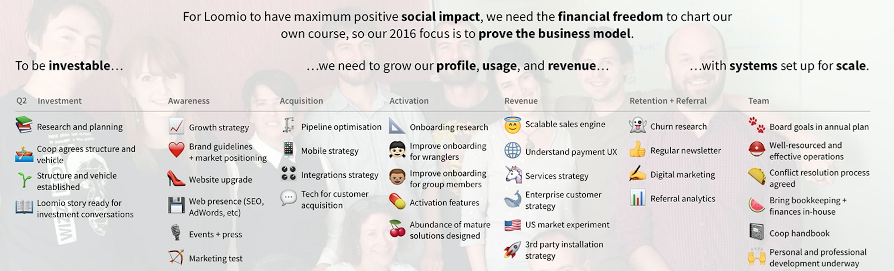

The Loomio Co-op Handbook
An update for 2022
This handbook was written circa 2016. We preseve it here because it's a useful history of the organization at the time.
In 2022, 10 years since Loomio launched, the team is smaller, but also more experienced. We're currently just 4 people in operational roles and 4 in advisory roles. We're still a worker-owned cooperative, and we're just as passionate about our work today as we were when this book was written - we've just changed how we work to suit our smaller team. We're proud of this handbook as it is, and hope you find something useful within.
If you're interested using Loomio, you're welcome to try a demo or start a trial at loomio.com.
If you've been following us for a long time, you might like to catch up with the current activities of the authors: Alanna Irving and Richard Bartlett.

The software we build is open source, and our organisation is open source too. This handbook is where we document how we run an efficient organisation without a hierarchy.
We build software for collaborative decision making, used by thousands of organisations and communities around the world. If you’re looking for a way to make group decisions without meeting, try it out at loomio.com.
VIDEO: Loomio co-founder Alanna introducing the co-op handbook, and talking about why we open source our organisational development.
If you're viewing this on a small screen, you'll find a table of contents by clicking the menu icon at the top left.
Other stories about developing an open organisation
Besides this handbook, Alanna and Rich have written a bunch of stories based on their experience as two of the Loomio co-founders. Here's a couple:
- Beyond “Dreamers vs Doers” — Full Circle Leadership
- How to Grow Distributed Leadership
- Bootstrapping a Bossless Organisation in 3 Easy Steps ;-)
- A Caring Organisation: Feelings, Magic & Gendered work
Feel free to contact @richdecibels on Twitter if you want to chat about this stuff üíÖ
About this handbook
If you find this handbook helpful in your work, please let us know. We'd love to hear from you. üêå
The handbook was discussed on Hacker News. The comment thread is a good source of further FAQ style information.
You can find the code on Github.

This work is licensed under a Creative Commons Attribution-ShareAlike 4.0 Unported License.
Our Cooperative
In this section, you can find out some of our history, and why we chose to incorporate as a worker-owned cooperative.
We have a fierce commitment to our values, which is reflected in all the choices we make, from the legal structure, to our daily working practices, how we look after our people and manage employment and co-op membership, to financing.
For more on that topic, check this beautiful article from Nathan Schneider: How a Worker-Owned Tech Startup Found Investors—and Kept Its Values.

History
Loomio began in 2011, when activists from Occupy Wall Street and social entrepreneurs from the Enspiral network realised they needed to solve the same problem: fast, inclusive, effective decision-making without meetings. In 2012, we formed our cooperative and released a prototype (Loomio Beta). We found that many others around the world needed the same solution.
In 2013, we ran a successful international crowdfunding campaign, enabling us to work on a new version of the software, Loomio 1.0, which was released the following year. In 2015, we raised a round of ethical capital, and are working to bring collaborative decision-making to millions more people around the world.
You can see a detailed timeline of our history between 2011 and 2015 here: http://www.loomio.org/timeline
(we hope to update it with the more recent stuff soon)
If you prefer video, here's a beautiful story from Ben Knight (33min), one of our cofounders. Or check this 3-minute version from Rich.
Purpose & Vision
The Loomio Co-operative exists to create a world where it’s easy for anyone to participate in decisions that affect them.
With the right collaborative process, groups generate better ideas, decisions and actions than any individual would by themselves. The Loomio Co-operative aims to break down the barriers to participation in decision-making at every level: in neighbourhoods, community organisations, businesses, social movements, and local and national governance.
Values
Co-operative social enterprise
Loomio is a social enterprise collectively owned by the people building it. Unlike a traditional profit-maximising company, revenue is not an end in itself, but a means towards achieving a core social purpose. A worker-owned cooperative structure is a powerful way to live our values of collaboration and collective ownership.
Independent and neutral
Loomio is committed to remaining independent so it can provide a neutral place for any group to come together.
Open-source collaboration
Loomio aims to develop open-source tools that make collaboration accessible to everyone.
Adaptive, reflexive, user-driven
Loomio aims to develop tools which are iterative, self-reflexive and adaptive, driven by the collective wisdom of the user community.
Transparency
The Loomio Co-operative will be surrounded by a valued community of users and contributors. This community must be confident that the Loomio Co-operative is doing what it says it is. We are committed to high standards for sharing information.
Our purpose, vision and values are enshrined in our company constitution.
Cooperative Principles
Our coop shares the seven cooperative principles:

The content on this page has been gratefully borrowed from the Worker Cooperative Code. We are re-sharing it here for our co-op member and others, to support the 5th Principle: Education, training and information.
What is a worker cooperative?
Cooperatives apply the values of cooperation – autonomy, democracy, equality, equity and solidarity – in the workplace and in their communities. Worker co-operatives are trading enterprises, owned and run by the people who work in them, who have an equal say in what the business does, and an equitable share in the wealth created from the products and services they provide. As well as benefiting their members, co‑operatives act together to ‘build a better world through co-operation’.
“Worker co-operatives have the objective of creating and maintaining sustainable jobs and generating wealth, in order to improve the quality of life of the worker-members, dignify human work, allow workers’ democratic self-management and promote community and local development.” (CICOPA/ICA, 2005.)
1st Principle: Voluntary and open membership
Co‑operative membership is open to all workers able and willing to accept the responsibilities of membership. Worker co-operatives function best as an inclusive team of members with long-term collective interests in the success of the business.
- Provide all workers with meaningful information about membership and how to join.
- Provide members with an agreed set of rights and responsibilities, usually as a member job description or membership agreement.
- Include a probationary period and membership training for workers who want to become members.
- Offer membership to all workers who are able and willing to accept the responsibilities of membership.
- Ensure the majority of workers are members and the majority of members are workers.
2nd Principle: Democratic member control
Co-operatives are democratic organisations controlled by their members, setting policies and making decisions. Members serving as elected representatives are accountable to the wider membership. Worker co-operatives succeed when all members participate in transparent, fair decision making; but also where members are given delegated authority to act on behalf of the collective.
- Ensure all members actively participate in the management of the business and long-term planning.
- Effectively communicate, both between the co‑operative and its members and between members themselves.
- Collectively agree and delegate authority to individual members to act on behalf of the co-operative as and where necessary.
- Ensure there are democratic processes, or democratic accountability, in all governance and management functions.
- Regularly review its governance and business management processes as it grows and develops.
3rd Principle: Member economic participation
Members contribute equitably to, and democratically control, the capital and finances of their co-operative. Members decide how to use surpluses (profits). Worker co-operatives should provide the pay and other benefits that members need and want, managing the business to provide them and protect its future.
- Allocate a percentage of surpluses to collectively owned financial reserves and capital.
- Ensure that members are enabled to invest in the co-operative if they want to. If members have individual investments, they do not attract additional voting rights.
- Have a planned and agreed pay and benefits structure, including non-financial benefits.
- Aim to offer pay and benefits sufficient to sustain long term employment and membership, to enable the co-operative to retain the required skills and experience.
- Ensure that any surplus in the form of pay and benefits is distributed fairly and equitably between members, relative to their contribution.
4th Principle: Autonomy and independence
Co-operatives are independent, self-help organisations controlled by their members. If they raise capital from external sources, they must maintain their co-operative autonomy. Worker co-operatives should actively plan and manage their co-operative to be a successful business and avoid becoming over dependent on any funder, supplier or customer.
- Have good financial controls and management, including cash flow forecasts and internal audits of all parts of the business.
- Actively manage and assign responsibilities for your operations, personnel, marketing and other business functions.
- Understand and control risks, both internal and external, facing your co-operative.
- Build your capability to identify and take advantage of business opportunities.
- Invest in equipment, premises and technology sufficient to achieve success.
5th Principle: Education, training and information
Co-operatives provide education and training for their members and employees so they can contribute effectively to the development of their co‑operative. They inform the general public about the nature and benefits of co-operation. Worker co-operative members should become multi-skilled, so they can participate fully in the management and development of the co-operative.
- Assess the technical, management and co‑operative skills needed to achieve your long term plans and replace key members who leave.
- Ensure all prospective members, members and elected representatives receive training in membership and co-operative skills.
- Encourage members in specialist roles to obtain technical skills and professional development for current and future needs.
- Develop and share management skills and techniques to permit efficient co-operative business co‑ordination.
- Educate business partners, customers and the public about the nature and benefits of co‑operative forms of business.
6th Principle: Co-operation amongst co-ops
Co‑operatives serve their members most effectively and strengthen the co-operative movement by working together through local, regional, national and international structures.
- Network with co‑operatives in your locality and industry to share intelligence, understand each others’ business needs and goals, and support each other.
- Trade with other co-operatives whenever possible.
- Find and refer new business opportunities to other co-operatives you know and trust.
- Collaborate with other co-operatives to achieve economies of scale, share costs, access to business opportunities and joint long-term development.
- Practice fair and honest commercial competition between co-operatives.
- Participate in regional and national co-operative activities to promote, develop and grow the co-operative economy.
7th Principle: Concern for community
Co-operatives work for the sustainable development of their communities, through working according to policies approved by their members. Co-operative businesses are rooted in community. By building good relations with your local and wider communities, you will create goodwill and opportunities for your co‑operative and members.
- Actively control the environmental and social impacts of your business.
- Agree and live up to ethical business standards.
- Operate high health and safety and worker welfare standards.
- Prioritise and promote ethical and sustainable initiatives, such as fair trade.
- Participate in your local, and wider, communities, and promote co-operative principles within them.
Constitution of Loomio Cooperative Limited
Loomio is a registered cooperative company in New Zealand.
INTERPRETATION
In this constitution, unless the context otherwise requires:
- “Act” m eans the Companies Act 1993 and its amendments.
- “s” m eans section references in the Act.
- “solvency test” means the solvency test in s4 of the Act, as may be modified in accordance with the Act.
- “Co-op” or “Company” m eans Loomio Co­operative Limited.
- “Transacting Shareholder” has the meaning ascribed to it in the Co-operative Companies Act 1996.
- “Transacting Share” means a share in the class established by Clause 2.1.
- Definitions in Act – Words or expressions used in this constitution bear the same meaning as in the Act. “Loomio Co-Op” or “Loomio Co-operative” m eans the Company
- Masculine, feminine, and neuter – Words which import any gender include the other genders.
- Singular and plural – Words which import the singular and plural number include the plural and singular number respectively.
- No limitation – the words “include”, “including” or similar do not imply any limitation.
- Conflict – If there is a conflict between the provisions of this constitution and a mandatory provision of the Act, the Act shall prevail.
- ordinary resolution – means a resolution approved by 75% (rounded down to the nearest whole person) o f the votes of those shareholders entitled to vote and voting on that resolution
- special resolution – means a resolution approved by: (i) 90%; or (ii) if there are less than 30 Transacting Shareholders, 100% minus two votes; of the votes of those shareholders entitled to vote and voting on that resolution
PART 1 – PURPOSE
1.1 The Loomio Co-operative exists to create a world where it’s easy for anyone to participate in decisions that affect them.
With the right collaborative process, groups generate better ideas, decisions and actions than any individual would by themselves. The Loomio Co-operative aims to break down the barriers to participation in decision-making at every level: in neighbourhoods, community organisations, businesses, social movements, and local and national governance.
Co-operative social enterprise The Loomio Co-operative is a social enterprise collectively owned by the people building it. Its principal activity is co-operative and not less than 60% of the voting rights in the Company will be held by its transacting shareholders. Unlike a traditional profit­maximising company, revenue is not an end in itself, but a means towards achieving a core social purpose. A worker-owned Co-operative structure is a powerful way to live our values of collaboration and collective ownership.
Independent and neutral The Loomio Co-operative is committed to remaining independent so it can provide a neutral place for any group to come together.
Open-source collaboration The Loomio Co-operative aims to develop open-source tools that make collaboration accessible to everyone.
Adaptive, reflexive, user-driven The Loomio Co-operative aims to develop tools which are iterative, self-reflexive and adaptive, driven by the collective wisdom of the user community.
Transparency The Loomio Co-operative will be surrounded by a valued community of users and contributors. This community must be confident that the Loomio Co-operative is doing what it says it is. The Loomio Co-operative is committed to high standards for sharing information and maintaining open books.
1.2 The Co-op is authorised to apply for registration as a Co-operative company under the Co-operative Companies Act 1996.
The relationship between the Constitution and the Co-operative Companies Act 1996 1.3 Loomio Co-operative Limited is registered under the Co-operative Companies Act 1996, the Companies Act 1993, and as such shall have the rights, powers, duties and obligations set out in the Co-operative Companies Act 1996, the Companies Act 1993 and this Constitution. 1.4 The Company, the Board, each Director and each Shareholder have the rights, powers, duties and obligations set out in the Companies Act 1993 or the Co-operative Companies Act 1996 except to the extent that they are negated or modified by this Constitution.
PART 2 – SHARES
2 RIGHTS AND POWERS ATTACHING TO SHARES
2.1 Transacting Shares A Transacting Share confers all of the following on the holder:
- The right to a distribution or rebate in any year in which the Board offers a distribution or rebate to the holders of Transacting Shares;
- The right to one vote on a poll at a meeting of the co-op on any resolution; and
- The right to a share in the distribution of any surplus assets of the Company.
2.2 Eligibility for Transacting Shares
Transacting Shares can only be held by a natural person or an organisation who is either:
- Employed by the Co-op; or
- Party to a contract with the Co­op for provision of services to the Co­op; or
- Has previously been party to a contract with the Co-op for provision of goods or services to the Co-op, and is, in the reasonable opinion of the Board, likely to again contract with the Co-op for the provision of goods or services to the Co-op; and
- Meets the Loomio Co­operative Membership Eligibility Policy set down by the transacting shareholders from time to time and agreed at a meeting of the shareholders by special resolution.
2.3 Issue of Transacting Shares The board may issue a Transacting Share only to a natural person or organisation who is eligible in accordance with Clause 2.2 (“eligible parties”) and who is either:
- approved by a resolution of the Board following a recommendation by the Transacting Shareholders (made by special resolution); or
- specified as a Transacting Shareholder in the initial application for registration of the Co-op.
2.4 Share Standard A Transacting Shareholder may hold one Transacting Share only.
2.5 Other Classes Any class of share may be issued by the board, subject to approval by special resolution of shareholders of the establishment of a new class of shares, at any time including those which:
- Are convertible;
- Are redeemable;
- Are restricted or limited as to transfer;
- Differentiate as to liability;
- Confer preferential rights to distributions of capital or income;
- Confer special quorum rights;
- Confer special, limited or conditional voting rights;
- Do not confer voting rights;
- Confer the right to appoint or remove a number of directors; or
- Possess any combination of two or more of the foregoing characteristics.
3 ISSUE OF SHARES
3.1 Payment for Shares Each application for the issue of a Share shall be accompanied:
- By payment of the nominal value at that time of that share at the date of such application; or
- As otherwise required by the Board, or the terms, or terms of issue, of the shares, from time to time.
3.2 Initial Share Issue
The Company must issue the number and class of shares specified in the application for registration to the person or persons named therein.
3.3 Subsequent Share Issues 3.3.1. The board may, with the approval of shareholders by ordinary resolution issue shares, securities that are convertible into shares or options to acquire shares at any time, to any person, in any number, in such classes and on such terms as it thinks fit subject to the provisions of the Act, and this constitution.
3.3.2. The issue of further shares ranking equally with, or in priority to, any existing shares, whether as to voting rights, distributions or otherwise, is deemed not to be an action affecting the rights attaching to the existing shares of that class.
3.3.3 The requirements of s45 of the Act are negated.
3.4 Consideration for Share Issues
3.4.1 At the time that this constitution is registered shares will have the following value: Transacting Shares have a nominal value of $1.
3.4.2 The consideration for which a share is issued may take any form and may be cash, promissory notes, contracts for future services, real or personal property, or other securities of the Company.
3.4.3 The nominal value of shares may be amended by special resolution of the shareholders.
3.4.4 The board must deliver notice of subsequent share issues to the Registrar of Companies within 10 working days of such issue.
3.5 Consolidation and Subdivision of Shares
The board may consolidate, divide or subdivide the shares or any class of shares in the Company into a lesser or greater number of shares.
4 ALTERATION OF SHAREHOLDER RIGHTS
**4.1 ** The Company may not take action that affects rights attached to shares unless that action has been approved by a special resolution of each interest group of shareholders, including the following rights:
- The rights, privileges, limitations and conditions attached to the share by this Act or the constitution, including voting rights and rights to distributions;
- The right to have the procedure set out in s117 and any further procedure required by this constitution for the amendment or alteration of rights, observed by the Company;
- The right to have any procedure required by this constitution for the amendment or alteration of rights not amended or altered.
5 LIABILITY OF SHAREHOLDERS
5.1 Limited Liability
5.1.1 The liability of a shareholder to the Company is limited to any amount unpaid on a share held by the shareholder.
5.1.2 An amount unpaid on a share may comprise all or part of the consideration payable in respect of the issue of the share, or any other liability imposed on its holder by its terms of issue.
5.2 Application of Distributions
Any dividend or distribution due to the holder of a share may be applied in reduction or satisfaction on any amount unpaid on that share or any other amount presently payable by the shareholder to the Company.
6 ALL SHARE REGISTER
6.1 Company to Maintain Share Register
6.1.1 The Company must maintain a share register that records the shares issued by the Company.
6.1.2 The share register must state, with respect to each class of shares the following details for the last decade of:
- The names, alphabetically arranged, and the latest known address of each person who is a shareholder; and
- The number of shares of that class held by each shareholder; and
- The date of any issue of shares to, or repurchase or redemption of shares from, or transfer of shares by or to, each shareholder and the name of the person to or from whom the shares were transferred.
6.1.3. An agent may maintain the share register of the Company.
6.2 Share Register as evidence of Legal Title
6.2.1. The entry of the name of a person in the share register as holder of the share is prima facie evidence that legal title to the share rests in that person.
6.2.2. The Company may treat the registered holder of a share as the only person entitled to:
- Exercise the right to vote attached to the share; and
- Receive notices; and
- Receive a distribution in respect of the share; and
- Exercise the other rights and powers attaching to the share.
6.3 Trusts not to be entered on Register No notice of a trust, whether express, implied, or constructive, may be entered on the share register.
6.4 Personal representative may be registered
6.4.1 A personal representative of a deceased person whose name is registered in the share register of the Company as the holder of a share in the Company is entitled to be registered as the holder of that share as personal representative.
6.4.2 The registration of a trustee, executor, or administrator pursuant to this clause does not constitute notice of a trust.
7 TRANSFER OF SHARES
7.1 Entry on the Register A share may be transferred by entry of the name of the transferee on the share register.
7.2 Form of Transfer
7.2.1 For the purpose of transferring shares, a form of transfer signed by the present holder of the shares or by its personal representative must be delivered to:
- The Company; or
- An agent of the Company who maintains the share register.
7.2.2 The form of transfer must be signed by the transferee if registration as holder of the shares imposes a liability to the Company on the transferee.
7.2.3 A transfer shall be an instrument in writing:
- In any usual or common form;
- In any other form which the board may approve; or
- In the form set out in the First Schedule to the Securities Transfer Act 1991 or amendments thereto.
7.2.4 On receipt of a form of transfer, the Company must forthwith enter or cause to be entered the name of the transferee on the share register as holder of the shares, unless:
- The board resolves within 30 working days of receipt of the transfer to refuse or delay the registration of the transfer, and the resolution sets out in full the reasons for doing so; and
- Notice of the resolution, including those reasons, is sent to the transferor and to the transferee within 5 working days of the resolution being passed by the board; and
- The board is permitted by clause 7.3 to refuse or delay registration.
7.3 Rights to refuse transfer The board may refuse to register the transfer of any share in any of the following circumstances:
- The Company has a lien on the share;
- The share is not fully paid;
- The holder of the share has failed to comply with the terms of any contract with the Company;
- The board considers that it would not be in the interests of the Company to do so;
- The board believes effecting the transfer would be a breach of the law; or
- The transferee does not meet the eligibility criteria or requirements defined for the issue of shares in the class of share that is being transferred.
8 EXPENDING OF SURPLUS
8.1 Board may authorise distributions if Company is solvent The board may make distributions to shareholders if:
(a) it is satisfied on reasonable grounds that the Company will, immediately after the distribution, satisfy the solvency test; and (b) it also gives consideration to making payments to:
- Support of projects that align with the purpose of The Company;
- Invest in other companies that share the purpose of The Company;
- Donate to charitable entities that share the purpose of The Company; at the same time as it makes a distribution; and (c) the shareholders, by ordinary resolution, approve the distribution or payment.
8.2 Manner of distribution A distribution may be any one or more of the following:
8.2.1 The payment of a rebate calculated in accordance with a formula determined by the board and approved by ordinary resolution of shareholders;
8.2.2 The payment of a dividend;
8.2.3 The offer of shareholder discounts in respect of some or all of the goods and services provided by the Company;
8.2.4 The cancellation or reduction of a shareholder’s liability in relation to a share to be acquired or redeemed by the Company, or as a result of a proposed alteration to this constitution;
8.2.5 The purchase or acquisition by the Company of its own shares;
8.2.6 The redemption by the Company of its shares; and
8.2.7 The giving of financial assistance for the purpose of, or in connection with the purchase of its own shares or the shares of its holding Company.
8.3 Directors’ Certificates and Solvency Test The directors who vote in favour of a distribution must sign a certificate stating that, in their opinion, the Company will immediately after the distribution, satisfy the solvency test and the grounds for that opinion. The board must not make a distribution if, after a distribution is authorised and before it is made, the board ceases to be satisfied on reasonable grounds that the Company will, immediately after the distribution is made, satisfy the solvency test.
8.4 Dividends A dividend is a distribution other than the purchase or acquisition by the Company of its own shares, or the giving of financial assistance for the purpose of, or in connection with the purchase of its own shares or the shares of its holding company. The board must not authorise a dividend in respect of some but not all the shares in a class unless the amount of the dividend in respect of a share of that class is in proportion to the amount paid to the Company in satisfaction of the liability of the shareholder under this constitution or under the terms of issue of the share or is required, for a portfolio tax rate entity, as a result of section HL7 of the Income Tax Act 2004.
8.5 Waiver of dividend with consent A shareholder may waive his or her entitlement to receive a dividend by notice in writing to the Company signed by or on behalf of the shareholder.
9 COMPANY MAY ACQUIRE ITS OWN SHARES
9.1 Right to acquire The Company may purchase or otherwise acquire its own shares if the board makes an offer to acquire such shares and at least one the following alternative circumstances in 9.1.2, 9.1.3 or 9.1.4 are fulfilled:
9.1.1 The offer is to all shareholders to acquire a proportion of their shares that:
9.1.2 would, if accepted, leave unaffected relative voting and distribution rights within each class, and affords a reasonable opportunity to accept the offer, or
9.1.3 The offer is to one or more shareholders, and all shareholders have consented in writing; or
9.1.4 The offer is special and the resolutions and disclosure document referred to in clauses 9.3 and 9.4 have been passed and given respectively.
9.2 Resolutions required for offers The board may make an offer to acquire shares issued by the Company only if it has previously resolved all of the following:
9.2.1 It is satisfied on reasonable grounds that immediately after the purchase or acquisition, the Company will satisfy the solvency test; and
9.2.2 The acquisition in question is in the best interests of the Company; and
9.2.3 The terms of the offer and the consideration offered for the shares are fair and reasonable to the Company; and
9.2.4 It is not aware of any information that will not be disclosed to shareholders; and
9.2.5 Which is material to an assessment of the value of the shares; and
9.2.6 As a result of which the terms of the offer and consideration offered for the shares are unfair to shareholders accepting the offer.
9.3 Further resolutions required for special offers Where the board makes a special offer to acquire shares to one or more shareholders without the consent in writing of all shareholders, then the board must also resolve:
9.3.1 That the acquisition is of benefit to the remaining shareholders; and
9.3.2 That the terms of the offer and the consideration offered for the shares are fair and reasonable to the remaining shareholders.
9.4 Disclosure Document for special offers
Before an offer is made pursuant to a resolution under clause 9.3, the Company must send to each shareholder a disclosure document that sets out:
9.4.1 The nature and terms of the offer, and if made to specified shareholders, to whom it will be made; and
9.4.2 The nature and extent of any relevant interest of any director of the Company in any shares the subject of the offer; and
9.4.3 The text of the resolutions required by clause 9.3, together with such further information and explanation as may be necessary to enable a reasonable shareholder to understand the nature and implications for the Company and its shareholders of the proposed acquisition.
9.4.4 The offer must be made not less than 10 working days and not more than 12 months after the disclosure document has been sent to each shareholder.
9.5 Resolutions and Certificate The resolutions referred to in this clause 9.1­9.5 must set out in full the reasons for the directors’ conclusions. The directors who vote in favour of the resolutions must sign a certificate as to the matters set out in it. The board may not make an offer to acquire shares issued by the Company if, after the passing of the resolutions and before the making of the offer the board ceases to be satisfied as to the matters resolved.
10 COMPANY MAY HOLD TREASURY STOCK
Shares issued by the Company which are surrendered or acquired by it shall be deemed cancelled immediately on acquisition unless;
10.1 The board resolves that the shares concerned shall be retained as treasury stock; and
10.2 The number of shares surrendered or acquired, when aggregated with shares of the same class held by the Company at the time of surrender or acquisition, does not exceed 5 percent or, in relation to surrendered Transacting Shares 20 percent, of the shares of that class previously issued by the Company, excluding shares previously deemed to be cancelled. The rights and obligations attaching to any treasury stock owned by the Company will be suspended during any such period during which the Company holds that treasury stock. Transfer of treasury stock held by the Company is deemed to be an issue of new shares.
11 REDEMPTION AND SURRENDER OF SHARES
11.1 Right to issue Redeemable Shares The Company may issue shares which are redeemable:
11.1.1 At the option of the Company; or
11.1.2 At the option of the holder of the shares; or
11.1.3 On a date specified by their terms of issue, for a consideration that is either:
- Specified; or
- To be calculated by reference to a formula; or
- Required to be fixed by a suitably qualified person who is not associated with or interested in the Company.
11.2 Consideration for the Surrender of Shares Unless otherwise specified in this constitution, the consideration for the surrender of a Transacting Share shall be the lesser of the nominal value of the share at the date it was issued to the shareholder, or the actual amount paid up on that share at the surrender date.
11.3 Surrender of Transacting Shares at option of Shareholder Transacting Shares may be surrendered at the option of the shareholder in any of the following situations:
11.3.1 The shareholder is no longer transacting business with the Co-op and has not transacted any business with the Co-op during the preceding year; or
11.3.2 The shareholder is no longer in a position to transact business with the Co­op.
11.4 Surrender of Transacting Shares at option of Co-op Transacting Shares may be surrendered at the option of the Co-op in any of the following situations:
11.4.1 The shareholder has not transacted any business with the Co-op during the preceding year, and in the opinion of the Board, is not likely to do so in the immediate future; or
11.4.2 The shareholder has failed to comply in a material respect with the requirements relating to transactions with the Co­op contained in any contract between the Co­op and the shareholder;
11.4.3 The Board finds that a shareholder has:
- Intentionally or repeatedly violated any provision of the Co-op’s Constitution, or policies issued by the Board;
- Taken actions that will materially impede the Co-op from accomplishing its purposes;
- Taken or threatened actions that are not aligned with the purpose of the Co-op;
- Wilfully obstructed any lawful purpose or activity of the Co-op and where that purpose or activity is aligned with the purpose of the Co-op; or
- Breached any contract with the Co-op.
11.6 Solvency Test The Board may only accept or enforce the surrender or redemption of a share if the Board is satisfied on reasonable grounds that immediately after the share has been redeemed, the Co­op will satisfy the solvency test.
11.7 Resolutions required for redemptions at option of Company The Company may exercise an option to redeem shares only if the board has previously resolved that:
11.7.1 It is satisfied on reasonable grounds that immediately after the shares have been redeemed, the Company will satisfy the solvency test; and
11.7.2 The redemption of the shares is in the best interests of the Company; and
11.7.3 The consideration for the redemption of the shares is fair and reasonable to the Company.
11.8 Further resolutions required for special redemptions Where the Company exercises a special option to redeem shares in relation to one or more shareholders without the consent in writing of all shareholders, then the board must also resolve:
11.8.1 That the redemption is of benefit to the remaining shareholders; and
11.8.2 That the consideration for the redemption is fair and reasonable to the remaining shareholders.
11.9 Resolutions and Certificate The resolutions referred to in this clause 11 must set out in full the reasons for the directors’ conclusions. The directors who vote in favour of the resolutions must sign a certificate as to the matters set out in that certificate.
The Company must not exercise an option to surrender or redeem shares if, after the passing of the resolutions and before the option is exercised, the board ceases to be satisfied as to the matters resolved.
PART 4 – SHAREHOLDERS
12 POWERS OF SHAREHOLDERS
12.1 Powers reserved to Shareholders Powers reserved to the shareholders by the Act or this constitution may be exercised only 12.1.1 At an annual or special meeting of the shareholders; or
12.1.2 By a resolution in lieu of a meeting.
12.2 Special Resolutions The shareholders may only exercise any of the following powers by special resolution, namely to: 12.2.1 Adopt a constitution, or alter or revoke the constitution;
12.2.2 Approve a major transaction;
12.2.3 Approve an amalgamation of the Company;
12.2.4 Appoint a liquidator;
12.2.5 Remove the Company from the register; and/or 12.2.6 Transfer the place of incorporation.
12.3 Unanimous Shareholder Agreement If all shareholders have agreed or concur, in writing and notwithstanding any other provisions in this constitution: 12.3.1 A dividend may be authorised otherwise than in accordance with s53;
12.3.2 A discount scheme may be approved otherwise than in accordance with s55;
12.3.3 Shares in the Company may be acquired otherwise than in accordance with s59 to s65;
12.3.4 Shares in the Company may be redeemed otherwise than in accordance with s69 to s72;
12.3.5 Financial assistance may be given for the purpose of, or in connection with, the purchase of shares otherwise than in accordance with s76 to s80;
12.3.6 The provision of remuneration and other benefits to directors may be authorised otherwise than in accordance with s161(1); and/or
12.3.7 Shares may be issued otherwise than in accordance with ss42, 44 or 45.
12.4 Solvency Test A power referred to in clause 12.4 must not be exercised unless the board is satisfied on reasonable grounds that the Company will, immediately after the exercise, satisfy the solvency test. The directors who vote in favour of the exercise of the power must sign a certificate stating that, in their opinion, the Company will, immediately after the exercise of the power, satisfy the solvency test.
If, after a resolution is passed under clause 12.4 and before the power is exercised, the board ceases to be satisfied on reasonable grounds that the Company will, immediately after the power is exercised, satisfy the solvency test, any exercise of the power is deemed not to have been authorised.
12.5 Management review by Shareholders
The chairperson of a meeting of shareholders must allow a reasonable opportunity for shareholders at the meeting to question, discuss, or comment on the management. A meeting of shareholders may pass a resolution relating to the management of the Company but this shall not be binding on the board.
13 MEETINGS AND RESOLUTIONS
13.1 Annual Meeting of Shareholders The board of a Company must call an annual meeting of shareholders to be held at such time and place as the board may appoint, either;
- In the case of an exempt Company, if all the shareholders of the Company agree not later than 10 months after the balance date of the Company; or
- In any other case, not later than 6 months after the balance date of the Company; AND
- Not later than 15 months after the previous annual meeting.
The Company does not have to hold its first annual meeting in the calendar year of its registration but must hold that meeting within 18 months of its registration. The Company must hold the meeting on the date on which it is called to be held.
13.2 Special Meetings of the Shareholders A special meeting of shareholders entitled to vote on an issue:
13.2.1 May be called at any time by the board; and
13.2.2 Must be called by the board on the written request of shareholders holding shares carrying together not less than 5% of the voting rights entitled to be exercised on the issue.
13.3 Resolution in lieu of meeting A resolution in writing signed by:
13.3.1 In the case of a resolution under s196(2) that no auditor be appointed, all the shareholders who are entitled to vote on the resolution;
13.3.2 In any other case, not less than the number of shareholders required to pass a special resolution who would be entitled to vote on that resolution at a meeting of shareholders who together hold not less than the number of votes required to pass a special resolution on which all the votes entitled to be cast on that resolution were cast, is as valid as if it had been passed at a meeting of those shareholders.
13.4 Resolution that there be no annual meeting The Company need not hold an annual meeting of shareholders if everything required to be done at that meeting (by resolution or otherwise) is done by resolution in lieu of a meeting in accordance with 13.3. Within 5 working days of a resolution in lieu of a meeting being passed, the Company must send a copy of the resolution to every shareholder who did not sign the resolution or on behalf the resolution was not signed.
A resolution in lieu of a meeting may be signed without any prior notice being given to shareholders and may consist of several documents (including letters, facsimiles, electronic mail or other similar means of communication) in like form each signed or assented to by one or more shareholders.
14 PROCEEDINGS AT MEETINGS OF SHAREHOLDERS
14.1 Chairperson may be appointed for meeting The shareholders present may choose one of their number to be chairperson of the meeting. The chairperson may (and if so directed by the meeting must) adjourn the meeting from time to time and from place to place. No business may be transacted at any adjourned meeting except the business which was left unfinished at the meeting which was adjourned.
14.2 Notice of Meetings Written notice of the time and place of a formal meeting of shareholders must be given to every shareholder entitled to receive notice of the meeting and to every director and any auditor of the Company not less than 10 working days before the meeting.
The notice must state both:
14.2.1 The nature of the business to be transacted at the meeting in sufficient detail to enable a shareholder to form a reasoned judgment in relation to it; and
14.2.2 The text of any special resolution to be submitted to the meeting. If a meeting of shareholders is adjourned for less than 30 days it is not necessary to give notice of the time and place of the adjourned meeting other than by announcement at the meeting which is adjourned.
14.3 Irregularity in provision of notice An irregularity in a notice of a meeting is waived if all the shareholders entitled to attend and vote at the meeting attend the meeting without protest as to the irregularity, or if all such shareholders agree to the waiver. The proceedings of a meeting are not invalidated by the accidental omission to give notice of the meeting to a person who is entitled to receive notice of it, or by non-receipt of the notice by such a person.
14.4 Entitlement to notice of meetings The shareholders who are entitled to receive notice of a meeting of shareholders are:
14.4.1 If the board fixes a date for the purpose, those shareholders whose names are registered in the share register on that date; or
14.4.2 If the board does not fix a date for the purpose, those shareholders whose names are registered in the share register at the close of business on the day immediately preceding the day on which the notice is given.
14.5 Limits on appointing dates A date must not be fixed for a Meeting that will take place more than 30 working days after or less than 10 working days after the date on which the Notice is given under Clause 14.2.
14.6 Methods of holding meetings A meeting of shareholders may be held either:
14.6.1 By a number of shareholders, who constitute a quorum, being assembled together at the place, date and time appointed for the meeting; or
14.6.2 By means of audio, audio and visual, communication by which all shareholders participating and constituting a quorum, can simultaneously hear each other throughout the meeting; or
14.6.3 By means of electronic communication through which all shareholders have the opportunity to comment on each proposal, and access the comments of other shareholders before voting closes.
14.7 Quorum No business may be transacted at a meeting of shareholders if a quorum is not present. At shareholder meetings, a quorum necessary for the transaction of business shall be 25% of the total number of shareholders if the Co-op has 300 or fewer shareholders; or 75 shareholders if the Co-op has more than 300 shareholders.
If a quorum is not present within 30 minutes after the time appointed for the meeting:
- In the case of a meeting called by the board on the written request of shareholders under s121(b), the meeting is dissolved, and
- In the case of any other formal meeting, the meeting is adjourned to the following week or to such other date, time and place as the directors agree, and, if at the adjourned meeting a quorum is not present within 30 minutes after the time appointed for the meeting, the shareholders or their proxies present are a quorum.
14.8 Voting In the case of a meeting of shareholders, unless a poll is demanded, voting shall be by whichever of the following methods is determined by the chairperson of the meeting:
14.8.1 Voting by voice; or
14.8.2 Voting by show of hands; or
14.8.3 In case of a meeting held by an electronic means under 14.6, by the votes placed on that electronic means. 14.8.4 In the case of a meeting of shareholders held by means of audio, audio and visual, or electronic communication, unless a poll is demanded, voting at the meeting shall be by the shareholders signifying individually their assent or dissent by voice.
14.9 Polls A declaration by the chairperson of the meeting that a resolution is carried by the requisite majority is conclusive evidence of that fact, unless a poll is demanded.
At a meeting of shareholders a poll may be demanded by:
14.9.1 Not less than 5 shareholders having the right to vote at the meeting;
14.9.2 A shareholder or shareholders representing not less than 10 per cent of the total voting rights of all shareholders having the right to vote at the meeting;
14.9.3 A shareholder or shareholders holding shares in the Company that confer a right to vote at the meeting and on which the aggregate amount paid up is not less than 10 per cent of the total amount paid up on all shares that confer that right; or
14.9.4 The chairperson of the meeting.
A poll may be demanded either before or after the vote is taken on a resolution. If a poll is taken, votes must be counted according to the votes attached to the shares of each shareholder present in person or by proxy and voting.
The chairperson of a shareholders’ meeting is not entitled to a casting vote. For the purposes of this clause, the instrument appointing a proxy to vote at a meeting of the Company confers authority to demand or join in demanding a poll and a demand by a person as proxy for a shareholder has the same effect as a demand by the shareholder.
14.10 Proxies
14.10.1 A shareholder may exercise the right to vote either by being present in person or by proxy. A proxy for a shareholder is entitled to attend and be heard at a meeting of shareholders as if the proxy is the shareholder. 14.10.2 A proxy must be appointed by notice in writing signed by the shareholder and the notice must state whether the appointment is for a particular meeting or a specified term.
14.10.3 No proxy is effective in relation to a meeting unless a copy of the notice of appointment is produced at least 48 hours before the start of the meeting.
14.11 Vote before notice of revocation A vote given in accordance with the terms of a notice of appointment of proxy is valid notwithstanding: 14.11.1 The previous death or insanity of the shareholder;
14.11.2 The revocation of the notice or of the authority under which the notice was executed; or 14.11.3 Transfer of the share in respect of which the notice is given. If no notice in writing of the death, insanity, revocation, or transfer has been received by the Company at the registered office before the commencement of the meeting or adjourned meeting at which the notice is used, or presented at the meeting or adjourned meeting before the vote is given.
14.12 Minutes The board must ensure that minutes are kept of all proceedings at formal meetings of shareholders. Minutes which have been signed correct by the chairperson of the meeting are prima facie evidence of the proceedings.
14.13 Shareholder proposals A shareholder may give written notice to the board of a matter the shareholder proposes to raise for discussion or resolution at the next meeting of shareholders at which the shareholder is entitled to vote.
If the notice is received by the board not less than 20 working days before the last day on which notice of the relevant meeting of shareholders is required to be given by the board, the board must, at the expense of the Company, give notice of the shareholder proposal and the text of any proposed resolution to all shareholders entitled to receive notice of the meeting. If the notice is received by the board not less than 5 working days and not more than 20 working days before the last day on which notice of the relevant meeting of shareholders is required to be given by the board, the board must, at the expense of the shareholder, give notice of the shareholder proposal and the text of any proposed resolution to all shareholders entitled to receive notice of the meeting.
If the notice is received by the board less than 5 working days before the last day on which notice of the relevant meeting of shareholders is required to be given by the board, the board must, if practicable, and at the expense of the shareholder, give notice of the shareholder proposal and the text of any proposed resolution to all shareholders entitled to receive notice of the meeting.
If the directors intend that the shareholders may vote on the proposal by proxy they must give the proposing shareholder the right to include in or with the notice given by the board a statement of not more than 1000 words prepared by the proposing shareholder in support of the proposal, together with the name and address of the proposing shareholder.
The board is not required to include in or with the notice given by the board:
14.13.1 Any part of a statement prepared by a shareholder which the directors consider to be defamatory (within the meeting of the Defamation Act 1992), frivolous or vexatious; or
14.13.2 Any part of a proposal or resolution by a shareholder that the directors consider to be defamatory (within the meaning of the Defamation Act 1992).
14.13.3 Where the costs of giving notice of the shareholder proposal and the text of any proposed resolution are required to be met by the proposing shareholder, the proposing shareholder must, on giving notice to the board, deposit with the Company or tender to the Company a sum sufficient to meet those costs.
14.14 Corporations may act by representatives A body corporate which is a shareholder may appoint a representative to attend a meeting of shareholders on its behalf in the same manner as that in which it could appoint a proxy.
14.15 Votes of Joint Holders Where 2 or more persons are registered as the holder of a share, the vote of the person named first in the share register and voting on a matter must be accepted to the exclusion of the votes of the other joint holders.
14.16 Other proceedings Except as provided in this constitution and the Act, a meeting of shareholders may regulate its own procedure.
14.17 Shareholder participation by electronic means (1) For the purposes of this schedule, a shareholder, or the shareholder's proxy or representative, may participate in a meeting by means of audio, audio and visual, or electronic communication if (a) the board approves those means; and (b) the shareholder, proxy, or representative complies with any conditions imposed by the board in relation to the use of those means (including, for example, conditions relating to the identity of the shareholder, proxy, or representative and that person's approval or authentication (including electronic authentication) of the information communicated by electronic means).
(2) to avoid doubt, participation in a meeting includes participation in any matter specified in this schedule or permitted by the constitution of the Company.
PART 5 – DIRECTORS
###15 APPOINTMENT AND REMOVAL OF DIRECTORS 15.1 Board Membership The Board shall consist of not less than four (4) nor more than fourteen (14) directors, as the Board may from time to time determine, and not less than 40% of Directors must be Transacting Shareholders.
15.2 First Directors A person named as a director in this constitution holds office as a director from the date of registration until that person ceases to hold office as a director in accordance with the Act or this constitution.
15.3 Subsequent Directors Subsequent directors of the Company will be elected by ordinary resolution, or appointed by the Board as set out at 15.4 Two or more directors may be appointed in a single resolution.
15.4. Appointed Directors
15.4.1 The board may appoint a director to fill a casual vacancy.
15.4.2 The board may appoint one or more persons who have specific skills or represents the community of Loomio users, as additional directors, provided that the total number of directors will not exceed 14.
15.4.3 A director appointed under this clause 15.4 holds office until the next annual meeting, but may stand for elections at that meeting.
15.5 Rotation of Board Membership Membership of the board will be rotated as follows:
15.5.1 No director shall hold office for a period of longer than two years without retiring and offering himself or herself for re-election.
15.5.2 At each annual meeting, at least one third of the currently occupied seats must be up for re-election.
15.5.3 For the purpose of the rotation of Directors, persons who became Directors on the same day must retire in the order determined by lot, unless the Board resolves otherwise.
15.5.4 If no new director is elected and if the retiring director is offering himself or herself for re-election, the retiring director shall be deemed to be re-elected unless it is expressly resolved by ordinary resolution not to fill the vacated office or a resolution for the re-election of that director is put to the annual meeting and lost.
15.6 Consent required A person must not be appointed a director of the Company unless he or she has consented in writing to be a director and certified that he or she is not disqualified from being appointed or holding office as a director of the Company.
15.7 Removal A director of the Company may be removed from office by special resolution passed at a meeting called for the purpose or for purposes that include the removal of the director. The notice of meeting must state that the purpose or a purpose of the meeting is the removal of the director.
15.8 Vacation of office The office of director of the Company is vacated if the person holding that office:
15.8.1 Resigns by signing a written notice of resignation and delivering it to the address for service of the Company, such notice to be effective when it is received at that address or at such later time specified in the notice; or
15.8.2 Is removed from office in accordance with clauses 15.7; or
15.8.3 Becomes disqualified from being a director pursuant to s151 of the Act; or
15.8.4 Dies.
15.9 Additional Directors The Board may from time to time appoint any person to be an additional director, either to fill a casual vacancy or as an addition to the existing directors, who shall hold office only until the next annual meeting.
16 POWERS OF DIRECTORS
The powers of the Directors will take into account the following unique features of Loomio Co-operative:
- In carrying out its obligations under the Act and under this Constitution, The Board will at all times carry out its duties with a view to serving the transacting shareholders, and finding ways to involve and engage the transacting shareholders in important decisions.
- Whenever developing processes to carry out their duties under this Constitution the Board will emphasise collaboration and generate collective wisdom within the shareholding and interest groups.
- When carrying out its duties, the Board will be guided by the purposes of the Company as expressed in this document.
Governance of Company
16.1 The business and affairs of the Company must be governed by, or under the direction of the board.
16.2 The board has all the powers necessary for governing, and for directing the management of the business and affairs of the Company.
17 DUTIES OF DIRECTORS
17.1 Duty to act in good faith Subject to clauses 17.2 to 17.4, a director, when exercising powers or performing duties, must act in good faith and in what the director believes to further the purposes of the Co­op.
17.2 Exercise of powers in relation to employees Nothing in clause 17.1 limits the power of a director to make provision for the benefit of employees of the Company in connection with the Company ceasing to carry on the whole or part of its business.
17.3 Directors to comply with Act and Constitution A director must not act, or agree to the Company acting, in a manner that contravenes the Act or this constitution.
17.4 Reckless trading A director must not cause or allow or agree to the business of the Company being carried on in a manner likely to create a substantial risk of serious loss to the Company’s creditors.
17.5 Duty in relation to obligations A director must not agree to the Company incurring an obligation unless the director believes at that time on reasonable grounds that the Company will be able to perform the obligation when it is required to do so.
17.6 Director’s duty of care A director when exercising powers or performing duties as a director, must exercise the care, diligence, and skill that a reasonable director would exercise in the same circumstances taking into account, but without limitation 17.6.1 The nature of the Company;
17.6.2 The nature of the decision; and
17.6.3 The position of the director and the nature of the responsibilities undertaken by it.
18 RELIANCE ON INFORMATION AND ADVICE
**18.1 ** A director of the Company, on exercising powers or performing duties as a director, may rely on reports, statements, and financial data and other information prepared or supplied, and on professional or expert advice given, by any of the following persons:
18.1.1 An employee of the Company whom the director believes on reasonable grounds to be reliable and competent in relation to the matters concerned;
18.1.2 A professional advisor or expert in relation to matters which the director believes on reasonable grounds to be within the person’s professional or expert competence;
18.1.3 Any other director or committee of directors upon which the director did not serve in relation to matters within the director’s or committee’s designated authority.
18.2 Clause 18.1 applies to a director only if the director
18.2.1 Acts in good faith; and
18.2.2 Makes proper inquiry where the need for inquiry is indicated by the circumstances; and
18.2.3 Has no knowledge that such reliance is unwarranted.
19 SELF INTEREST TRANSACTIONS
19.1 Interests Register
19.1.1 A director must, forthwith after becoming aware of the fact that it is interested in a transaction or proposed transaction with the Company, cause to be entered in the interests register, and they disclose to the board the nature and extent of the director’s interest and the monetary value of it if the monetary value of the director’s interest is able to be quantified.
19.1.2 A general notice entered in the interests register and, if the Company has more than one director, disclosed to the board to the effect that a director is a shareholder, director, officer or trustee of another named company or trustee for another named person or company and is to be regarded as interested in any transaction which may, after the date of the entry or disclosure, be entered into with that company or person, is a sufficient disclosure of interest in relation to that transaction.
19.1.3 A director of the Company is not required to comply with clause 19.1.1 if:
19.1.3.1 The transaction or proposed transaction is between the director and the Company; and
19.1.3.2 The transaction or proposed transaction is or is to be entered into in the ordinary course of the Company’s business and on usual terms and conditions.
19.1.4 A transaction entered into by the Company in which a director of the Company is interested may be avoided by the Company at any time before the expiration of three months after the transaction is disclosed to all the shareholders (whether by means of the Company’s annual report or otherwise).
19.1.5 A transaction cannot be avoided if the Company receives fair value under it.
19.1.6 Nothing in clauses 19.1.1 to 19.1.5 applies in relation to an indemnity given, insurance provided, or remuneration or any other benefit given to a director in accordance with this constitution.
19.2 Interested Directors may vote A director of the Company who is interested in a transaction entered into, or to be entered into, by the Company, may
19.2.1 Vote on a matter relating to the transaction; and
19.2.2 Attend a meeting of directors at which a matter relating to the transaction arises and be included among the directors present at the meeting for the purpose of a quorum; and
19.2.3 Sign a document relating to the transaction on behalf of the Company; and
19.2.4 Do any other thing in his or her capacity as a director in relation to the transaction, as if the director were not interested in the transaction; UNLESS t here is an objection from any other director.
20 USE OF COMPANY INFORMATION
The Company is dedicated to the principles of transparency and openness where possible and appropriate in the treatment of Company information. Directors may distribute and use any information that comes to their attention as directors of the Company except where information is marked ‘confidential’. Where information is marked ‘confidential’ the directors may not release or use that information for any purposes other than in accordance with the purpose of the Co-op.
Information may only be marked ‘confidential’ in any one or more of the following circumstances, and only if a release date for the information is also displayed clearly on the document:
20.1 In order to assess a document for confidentiality, a single director may mark a document ‘confidential’ for a period of no greater than 48 hours if they consider in good faith that the document may fit into any of the following categories;
20.2 If a document is considered to be commercially sensitive by two or more directors, a document may be marked confidential for a period of no greater than 12 months;
20.3 If a document contains personal or private information which the Company is required to protect under Privacy legislation, any parts of a document (or if necessary, the entire document) containing identifying information may be marked ‘confidential’ with release instructions including ‘only with the signed consent of [name of individual]’.
20.2 Disclosure and use of information generally A director of the Company may disclose, make use of, or act on Company information if:
20.2.1 Particulars of the disclosure, use, or the act in question are entered in the interests register; and 20.2.2 The director is first authorised to do so by the board; and
20.2.3 The disclosure, use, or act in question will not, or will not be likely to, prejudice the Company.
21 PROCEEDINGS OF DIRECTORS
21.1 Chairperson
21.1.1 The directors may elect one of their number as a chairperson of the board to hold office until he or she resigns or until the directors elect a chairperson in his or her place.
21.1.2 If no chairperson is elected, or if at a meeting of the board the chairperson is not present within 10 minutes after the time appointed for the commencement of the meeting, the directors present may choose one of their number to be chairperson of the meeting.
21.3 Notice of meeting
21.3.1 A director or, if requested by a director to do so, an employee of the Company, may convene a meeting of the board by giving notice in accordance with clause 21.3.2.
21.3.2 Not less than 2 working days’ notice of a meeting of the board must be sent to every director, whether or not it is in New Zealand, and the notice must include the date, time and place of the meeting and the matters to be discussed.
21.3.3 An irregularity in the notice of a meeting or a failure to give notice is waived if all directors entitled to receive notice of the meeting attend the meeting without protest as to the irregularity or if all directors entitled to receive notice of the meeting agree to the waiver.
21.4 Methods of holding meetings A meeting of the board may be held either:
21.4.1 By a number of the directors, who constitute a quorum, being assembled together at the place, date, and time appointed for the meeting; or
21.4.2 By means of audio, or audio and visual, communication by which all directors participating and constituting a quorum, can simultaneously hear each other throughout the meeting.
21.5 Quorum 21.5.1 No business may be transacted at a meeting of the board if a quorum is not present.
21.5.2 A quorum for a meeting of the board is a majority of the directors.
21.6 Voting Every director has one vote.
21.6.1 The chairperson shall not have a casting vote.
21.6.2 A resolution of the board is passed if it is agreed to by all directors present without dissent or if a majority of the votes cast on it are in favour of it.
21.6.3 A director at a meeting of the board is presumed to have agreed to and to have voted in favour of, a resolution of the board unless it abstains from or votes against the resolution at the meeting.
21.7 Minutes The board must ensure that minutes are kept of all proceedings of the board.
21.8 Unanimous Resolution
21.8.1 A resolution in writing, signed or assented to by all directors then entitled to receive notice of a board meeting, is as valid and effective as if it had been passed at a meeting of the board duly convened and held. 21.8.2 Any such resolution may consist of several documents (including facsimile or other similar means of communication) in like form each signed or assented to by one or more directors.
21.8.3 A copy of any such resolution must be entered in the minute book of board proceedings.
21.9 Other proceedings Except as provided in this constitution and the Act, the board may regulate its own procedure.
22 REMUNERATION AND OTHER BENEFITS
22.1 The Board may authorise the following remuneration and benefits for directors if they are satisfied that to do so is fair to the Company, and approval of shareholders by special resolution is given:
22.1.1 Payment of remuneration or the provision of other benefits by the Company to a director for services as a director or in any other capacity;
22.1.2 Payment by the Company to a director or former director of compensation for loss of office; 22.1.3 Making of loans by the Company to a director;
22.1.4 Giving of guarantees by the Company for debts incurred by a director; and
22.1.5 Entering into of a contract to do any of the things permitted by this clause 22.1.
22.2 If a payment, benefit, loan, guarantee or contract is authorised under clause 22.1: 22.2.1 The board must ensure that particulars thereof are forthwith entered in the interests register, and 22.2.2 Directors who vote in favour thereof must sign a certificate stating that, in their opinion, it is fair to the Company, and the grounds for that opinion.
23 INDEMNITY AND INSURANCE
23.1 Company may indemnify a director or employee
23.1.1 The Company may indemnify a director or employee of the Company or a related company for any costs incurred by him or her in any proceeding
23.1.1.1 That relates to a liability for any act or omission in its capacity as a director or employee; and
23.1.1.2 In which the judgement is given in its favour, or in which it is acquitted, or which is discontinued.
23.1.2 The Company may indemnify a director or employee of the Company or a related company in respect of 23.1.2.1 Liability to any person other than the Company or a related company for any act or omission in its capacity as a director or employee; or
23.1.2.2 Costs incurred by that director or employee in defending or settling any claim or proceeding relating to any such liability, not being criminal liability in respect of a breach in the case of a director, of the duty specified in s131 or, in the case of an employee, of any fiduciary duty owed to the Company or a related company.
24 INSURANCE FOR A DIRECTOR OR EMPLOYEE
The Company may, with the prior approval of the board, effect insurance for a director or employee of the Company or a related company in respect of
24.1 Liability, not being criminal liability, for any act or omission in its capacity as a director or employee; or 24.2 Costs incurred by that director or employee in defending or settling any claim or proceeding relating to any such liability; or
24.3 Costs incurred by that director or employee in defending any criminal proceedings:
24.3.1 That have been brought against the director or employee in relation to any act or omission in its capacity as a director or employee; and
24.3.2 In which it is acquitted.
24.4 The directors who vote in favour of authorising insurance under this clause must sign a certificate stating that, in their opinion, the cost of effecting the insurance is fair to the Company.
24.5 The board must ensure that particulars of any indemnity given to, or insurance effected for, any director or employee of the Company or a related company, are entered into the interests register.
PART 6 – OTHER PROVISIONS
25 AMENDMENT OF CONSTITUTION
The shareholders of the Company may, by special resolution, alter or revoke this constitution.
26 METHOD OF CONTRACTING
A contract or other enforceable obligation may be entered into by the Company as follows
26.1 An obligation which, if entered into by a natural person, would, by law, be required to be by deed, may be entered into on behalf of the Company in writing signed under the name of the Company by:
26.1.1 Two or more directors of the Company; or
26.1.2 A director, and another person or persons authorised to do so by the board whose signature or signatures must be witnessed; or
26.1.3 One or more attorneys appointed by the company in accordance with s181 of the Act.
26.2 An obligation which, if entered into by a natural person, is by law, required to be in writing, may be entered into on behalf of the company in writing by a person acting under the Company’s express or implied authority. 26.3 An obligation which, if entered into by a natural person, is not, by law, required to be in writing, may be entered into on behalf of the Company in writing or orally by a person acting under the Company’s express or implied authority.
27 COMPANY RECORDS
The Company must keep the following documents at its registered office:
27.1 This constitution;
27.2 Minutes of all meetings and resolutions of shareholders within the last 7 years;
27.3 An interests register;
27.4 Minutes of all meetings and resolutions of directors and directors’ committees within the last 7 years;
27.5 Certificates given by directors under the Act within the last 7 years;
27.6 The full names and addresses of the current directors;
27.7 Copies of all written communications to all shareholders or all holders of the same class of shares during the last 7 years, including annual reports;
**27.8 ** Copies of all financial statements and group financial statements required to be completed by the Act or the Financial Reporting Act 1993 for the last 7 completed accounting periods of the Company;
27.9 The accounting records required by s194 for the current accounting period and for the last 7 completed accounting periods of the Company; and
27.10 The share register.
28 ACCOUNTS
The board of the Company must cause accounting records to be kept that:
28.1 Correctly record and explain the transactions of the Company; and
28.2 Will at any time enable the financial position of the Company to be determined with reasonable accuracy; and
28.3 Will enable the directors to ensure that the financial statements of the Company comply with s10 of the Financial Reporting Act 1993 and any group financial statements comply with s13 of that Act; and
28.4 Will enable the financial statements of the Company to be readily and properly audited.
29 ANNUAL REPORT
29.1 The board must, within 5 months (or if the Company is an exempt company, within 9 months) after the balance date of the Company, prepare an annual report on the affairs of the Company during the accounting period ending on that balance date.
29.2 The board must send to every shareholder of the Company, not less than 20 working days before the date fixed for holding the annual meeting of shareholders:
29.2.1 A copy of the annual report; or
29.2.2 A notice containing the statements specified in s209(3) of the Act accompanied by any additional information or documentation that the board of the Company thinks fit.
29.3 If the board has sent a notice to shareholders under clause 29.2.2, the board must:
29.3.1 Send a copy of the annual report and the concise annual report (if one has been prepared) to any shareholder if requested to do so within 15 working days of receipt of the notice of request in accordance with s209A of the Act.
29.3.2 Ensure that the annual report and concise annual report (if one has been prepared) are made available by electronic means in accordance with s209B of the Act.
29.4 Every annual report for the Company must be in writing and dated and must contain the reports, financial statements and information required by s211.
29.5 Subject to clause 29.6, a shareholder of the Company may from time to time, by written notice to the Company, waive the right to receive all or any documents from the Company and may revoke the waiver in the same manner and, while the waiver is in effect, the Company need not send to the shareholder the documents to which the waiver relates.
29.6 If a shareholder of the Company purports to waive the right to receive both a copy of the annual report and a notice under clause 29.2.2:
29.6.1 The purported waiver is invalid; and
29.6.2 The board of the Company must send to the shareholder a copy of the annual report or a notice under clause 29.2.2.
30 AUDITOR
30.1 The Company must, at each annual meeting, appoint an auditor to
30.1.1 Hold office from the conclusion of the meeting until the conclusion of the next annual meeting; and
30.1.2 Audit the financial statements of the Company for the accounting period next after the meeting.
30.2 Notwithstanding clause 30.1, the Company need not appoint an auditor if, at or before the meeting, a unanimous resolution to that effect is passed by all the shareholders who would be entitled to vote on that resolution at a meeting of shareholders. Such a resolution shall cease to have effect at the commencement of the next annual meeting.
31 NOTICES
Notices, statements, reports, accounts, or other documents must be served in accordance with Part XXII of the Act.
Governance
Loomio has a board of directors, which serves a similar governance function to boards of other New Zealand companies.
A board is:
- a group who meet regularly to look at the performance and strategic progress of the company
- at least one independent director and other owner-operator directors (executive directors)
- a group who can separate themselves from the day-to-day operations and take a birds-eye view of the business
- a group who can debate the difficult issues and come out with a clear decision for the future of the company
- ultimately, a group who guides, and is committed to, the company.
At Loomio, directors are appointed by cooperative members, i.e. the shareholders. According to our constitution, at least 40% of the directors must also be co-op members.
We mandate the board in the areas of long-term strategy, legal and regulatory compliance, risk management, and approving our overall budget.
The Loomio board meets monthly, and collaborates together on Loomio between meetings.
Some responsibilities of our board:
- bringing business and other subject-area expertise to critiquing and providing accountability on the member-created strategy
- ensuring good governance by making sure we've got the right people & processes to deliver our strategy
- making sure the company complies with the law
The board balances opportunity and risk, working on behalf of member shareholders, investors, and all Loomio stakeholders to guide and support the management of the company. Operationally, this is carried out through delegation to the coordinators.
Working together
We use rhythms to balance freedom and focus
- our purpose is our forever reason for being
- we do strategy to tell stories from 3 years in the future
- we do planning every 3 months so everyone is focussed on the same thing
- we run two-week sprints to maintain agility, clarity, and accountability
- we self-organise into dynamic working groups to address areas of work
- we have a collaborative process to prioritise product development
The evolution of our organisational structure
The swarm
In the earliest days of Loomio, we were organised as a "swarm" - we had open door meetings once a week, and anyone could rock up and help out. We ran a tiny crowdfunding campaign, and founded an LLC so we could have a bank account.
In 2012, the core team committed to the project, and we formed a worker-owned cooperative. There were still a lot of people contributing on a casual part time basis, but there was also a group of full time people who became co-owners. We raised a round of loans from friends and family, and convened a board.
Internally, we were "self-organised" and it was somewhat chaotic, but it worked for extremely flexible adaptation and lots of learning quickly. We focused on peer-to-peer support systems like stewardship, and having regular retreats.
Coordinated programs
In mid-2014, we completed a major crowdfunding campaign, which meant we suddenly had 1,600 new external stakeholders who were expecting us to deliver on our promises. This triggered us to develop a more explicit organisational structure.
We broke the team up into work programs, and nominated coordinators. Every program had a mandate to deliver a specific outcome, a share of the budget as allocated by the coop members, and a coordinator to maintain alignment within and between programs.
This system worked pretty well: we delivered on our crowdfunding promises and we learned a lot about how a democratic workplace can be super efficient.
Embracing agile
Then we evolved again, and became a fully agile team. We had always drawn on elements of agile organising in our software development practices, but it was when we started incorporating all work across the co-op into agile sprints that it really clicked together.
Every 3 months we stop and reassess the team makeup, the coordinators, and the budget to check: are we still making the absolute best use of this money that’s been entrusted to us? This made us super adaptive and efficient, but of course it was really disruptive too.
In late 2015 we raised money from impact investors, which finally brought us to a level of financial security where we could think more than 3 months ahead. This has enabled us to thinking long-term, resource a solid core team, and settle into a set of functional processes that address different perspectives and time-scales of our work.
Strategy
We do strategy to tell stories from 3 years in the future
The strategy working group convenes to talk about a topic from the perspective of three years out. The working group is open to anyone on the team. Sometimes we invite advisors or experts in to share their expertise, too.
We use lots of different approaches to do this long term thinking together, e.g. see this article about how Vivien guided us through two different frameworks: Blue Ocean and Transformative Scenarios.
Collaborative Storytelling
One approach we’ve seen work really well is collaborative storytelling. The narrative format is an excellent way to get people to talk together in plain language about what me might do in the future. It’s an accessible way for anyone on the team to contribute their piece to the collective intelligence, and for us to build shared language.
For an example, see this story we wrote in 2015, envisioning the product in 5 years.
Strategy is not a plan exactly, it is a story: a way for us to think together about the future, rather than decide exactly on what we must do. No one knows what will happen in three years, so we don’t get too caught up on detail at this timescale.
The 12-month horizon is a bit more predictable though. That’s where we do planning.
Planning
Annual
We do annual planning so everyone is focused on the same thing, and all the different areas of our work add up to a coherent and coordinated whole.
Our annual planning process starts with a day out of the office. Together we agree what our focus will be for the year.
2016 Plan
We’ve always said that the best way we can deliver our social mission is to develop the financial freedom to chart our own course. So we agreed that our focus for 2016 is proving the business model.
We discussed how we can break this work up into streams, based on the groups of people we serve:
- we want to earn the confidence of values-aligned investors who will support our growth
- we want to reach out into the world to tell people about how we can help them organise inclusively and effectively
- we want to support our customers to use Loomio to make a positive impact in their workplaces and communities
- and we want to nurture our team of amazing humans to feel awesome in their work
Quarterly
Every quarter, we have an away day (preceded and followed by various preparation and workshops), where we take stock of where we are relative to our overall vision, annual plan, and emerging reality, and decide what to focus on for the coming 3 months. This allows us to update our understanding of our annual plan as we learn more, and the world changes, and adjust course accordingly.
Quarterly plans take a range of forms, depending on the circumstances and needs of the team. Usually we end up with a more in-depth document, accompanied by an easily accessible summary.
The goal is to provide a guiding focus for all our work across the team. Because we give individuals a lot of autonomy and don't micro-manage, we need to agree some themes and shared goals to have collective impact. If we try to do everything, we're likely to be distracted and stretched too thin. But we like to name ambitious goals to motivate ourselves.


Away Days
Pre-Away Day
- working groups convene and discuss what they accomplished that quarter, and what they've learned
- evidence, data, and metrics are gathered
- the coordinators write a quarterly report giving an assessment of how we did achieving our previous quarterly goals and where we're at with the overall plan
- everyone individually reflects on what happened over the quarter and what they think about upcoming priorities (sometimes informally, sometimes we send out a survey)
Away Day (Offsite)
While we leave room for flexibility in the agenda and facilitation, this is a format we've generally found works for us.
- Arrive and have an extended check-in circle, with space for both personal and professional reflections from each person
- Context from the Coordinators, reviewing what happened in the last quarter and reminding us of the quarterly planning process and goals
- Dialogue circle on a relevant theme, to enable some deeper collective thinking
- Gather questions and discussion topics; clarify what we all need to feel resourced to set the upcoming quarterly priorities
- Co-create afternoon sessions, which can take a range of formats: open space, pair walks, whole group discussion, breakout small groups on specific topics
- Summarise, clarify next steps, and check out
Post-Away Day
- Followup workshops to go deeper on topics that arose out of the away day, which are usually more detailed and elucidate a strategy or work plan for a specific area
- Coordinators synthesise the outcomes of the away day and reflect them back to the team
- Discuss and work toward agreeing the quarterly goals on officially on Loomio
- The team gets to work delivering our targets for the quarter
Sprints
we run two-week sprints to maintain agility
Like a lot of software companies, we use an agile software development process known as “scrum” to coordinate our work.
We break up the year into two-week chunks. Each chunk is called a sprint, though that is kind of a dumb name because it’s more about jogging at a sustainable pace, rather than sprinting as fast as we can and collapsing at some imaginary finish line.
The Sprint Board
Probably the best way to understand it is to look at our sprint board on Trello:

Inbox is where you put stories that you think we should work on soon.
The backlog groomers get together fortnightly to consider these stories and decide if it is a priority (moving the card to Next Up) or not (Backlog).
The work for this Sprint is in the To do this sprint column. The whole team decides which stories to bring into each sprint at Sprint Planning on the first day of the sprint (every second Tuesday).
When someone is working on a ticket, we put their face on it and move it to In Progress.
At the top of the Done column is a Sprint Summary card. It includes our Sprint goals, notes about team Capacity, and the agenda for the Sprint Demo.
Our backlog is divided between this quarter and not this quarter so we can save good cards but not work on them straight away.
Sprint Ceremonies
We have a day between sprints to use for planning and tying up loose ends. We find that investing time in good preparation makes the whole sprint process a lot smoother. On prep day, the team checks their outstanding Trello cards, reflects on what they want to prioritise in the upcoming sprint, and generally clears the decks to be ready for sprint planning.
Sprint planning happens on the first day of the sprint. Everyone comes to this meeting, where we agree sprint goals, check team capacity, agree which stories we’re going to take on, and identify risks. At the end of the meeting, we collectively commit to delivering all this work by the end of the sprint.
Stand-up happens every morning. It’s rapid fire, so everyone comes prepared with four pieces of information: what I did yesterday; what I'm doing today; any blocks that might stop me; and what I'm doing to look after my wellbeing today.
Backlog grooming happens in the middle of the sprint. It where we review all the cards on the board, process incoming feedback and prioritise what to work on in the product. More details about this process here.
Sprint retrospective is on the last day of the sprint. We reflect on how the last two weeks have been, and discuss any process improvements we want to focus on in the upcoming sprint.
Sprint demo is the last thing we do in the sprint. We get together to celebrate everything we completed over the past two weeks: working software, new designs, amazing customer stories we’ve heard, new policies, or any other finished work we want to share. Often, friends join us from outside the team who are interested to know what we're up to.
Coordination at Loomio
Context
As a worker-owned cooperative committed to decentralising decision-making, Loomio does not have a traditional managerial hierarchy. However, a big picture perspective of how all the parts of the organisation and different work areas fit together, and how they intersect with the budget and longer term strategy, is essential to operational effectiveness and overall success of our mission. At Loomio, this role is called a Coordinator.
Our guiding principle for coordination is "dynamic hierarchies by consent".
"Hierarchies", because we mandate certain people and roles with certain power and responsibility, to perform functions the co-op decides are needed. It’s plural because there is no one hierarchy, but multiple ones we create to suit specific purposes.
"Dynamic", because these roles and internal structures are constantly evolving. We adapt them to meet the co-op’s needs responsively. Individuals rotate in and out of roles regularly. Internal structures are always up for discussion. We review all roles at least quarterly (although they may change less frequently).
"Consent", because ultimately all mandate and power traces back to the co-op membership - in others words, all of us together.
A coordinator is not a "boss" or “manager” in the familiar sense. The role carries no more inherent authority than any other in the co-op. It’s simply focused in a different way, on synthesis, the spaces between, the overall picture, and the intersections of governance, planning, and execution.
The role of coordinator carries some aspects of a senior management role, in that the board and the members delegate ensuring operational execution in the co-op. However, it’s distributed among multiple people, and ultimately accountable to the workers themselves. It also carries aspects of facilitation, support, and servant leadership.
Mutually agreed structure for our work helps us to be more productive and happier. Loomio is committed to self-determination for workers. At the same time, we are keenly aware of the Tyranny of Structurelessness. What we aim for instead is "Tyranny-less structures".
The Role of the Coordinator
Key concepts
-
Delegation - Many of the responsibilities of the coordinator are fulfilled by delegation to others. They cannot and should not fulfil them all directly.
-
Synthesis - Coordinators talk to different people, sense emerging themes, facilitate the team talking to itself effectively, and enhance our collective shared understanding.
-
Judgement - We mandate the coordinators with our trust to make calls about things like how good is good enough for a piece of work, timing for taking on different issues, and prioritisation.
-
Responsiveness - Coordinators keep a margin of capacity to deal with emergent and unexpected needs. If it’s no one job yet, it falls to the coordinators to figure out who should handle it.
-
Skill - Given the level of responsibility, this is a role for experienced people. We balance selecting people with leadership skills and management experience with investing in upskilling and training new people internally.
-
Creating the Container - We ask the coordinators to pay attention to the conditions in which we are working, and help continuously improve them. It’s not just about the work, but the context of the work.
Role Policies
-
There are at least 2 coordinators at any given time (never a single person)
-
Coordinators need to be Co-op Members
-
Coordinators check in with each other regularly, balancing their workload and decision-making together
-
Coordinators think and act specifically from their perspective as coordinators (as opposed to their other identities like Member or Director)
-
Coordinators have a coach or mentor (separate from their steward as a Member) - this role is often held by the Chair of the Board
Entry
-
Appointed by co-op members, with input from all workers
-
Selected for servant leadership skills, management experience, operational reliability, strategic thinking, and long standing as a co-op member
-
Onboarded and trained by existing coordinators (overlap between new and experienced coordinators helps maintain continuity)
-
Members are invited to express interest in taking up the coordinator role at any time, but rotating in is taken slowly (to ensure operational consistency)
Exit
-
We ask coordinators to give as much notice as possible when they are thinking of moving out of the role, to minimise the risk of disruption
-
Can be requested to step down by Members or the Board, or removed by a Member decision meeting the requirements of a special resolution (as defined in the constitution)
Coordinator Responsibilities
Please note that "responsibility" means the coordinator is expected to make sure it gets done, not that they will do the work directly. Much of this work is delegated to other people or processes.
-
Report against the annual plan to Board & Members
-
Staffing decisions and hiring
-
Hire project-based short term contractors directly (people not stepping onto the membership pathway)
-
Hire long term employees with an employment panel (for people who are potentially stepping onto membership pathway)
-
-
Employment responsibilities
-
New staff onboarding
-
Employment contracts (named as person staff report to)
-
Contract changes
-
Visa applications and coordination
-
Act as stewards for short term contractors
-
Manage leave
-
-
Board & Governance
-
Liability - board is responsible for certain things that the coordinators execute, so there needs to be a good link between them. One coordinator is named as having a special focus on the relationship with the Board.
-
Ensure preparation and implementation of board decisions. Resource the board for decisions with background material, and interpret decision into operational changes.
-
Budget - board approves the overall budget, and coordinators break it down into operational reality to achieve strategic outcomes, and prepare the budget based on planning (goals, activity, organisation and resources)
-
Receive Role support - extra support/accountability in addition to stewardship and sprint systems (chair of the board or external director or adviser provides coaching/mentoring)
-
Coordinators attend board meeting to the extent necessary
-
Maintain companies office responsibilities, such as share register, director changes, and annual report
-
Manage company secretary
-
-
Create conditions to enable operational delivery
-
Can delegate to a process (such as agile sprints), structure (like working groups) or person, or simply support self-management emerging from the team (if it’s working well). Coordinators make sure the system we're using is working.
-
Support operational delivery process development and quality improvements
-
Raise flags to the membership, board, teams, or individuals / stewards if there are problems with operational accountability or delivery
-
-
Coordinate annual/quarterly strategic planning process
-
Ensure whatever meetings or processes needed are carried out
-
Synthesise, facilitate, report back, support decision-making
-
Have one on one conversations as needed, to hear solutions and concerns
-
Coordinate logistics and planning of retreats and away days
-
Physical office management (lease, supplies, access, safety, mail)
-
-
Membership
-
Facilitate recommending new members when they reach that point in the pathway process
-
Offboard leaving members
-
Agree plan of action with members who need to go on leave (whether they hold onto their membership during that time, or relinquish it)
-
Flag any eligibility concerns to the board (member in situation where they can’t meet shareholder duties)
-
Maintain accurate and up to date shareholding
-
-
Oversee budgeting, finances, and assets
-
Coordination of continuous financial operations
-
Ensure accuracy of record keeping
-
Budget tracking
-
Sign off GST returns
-
Banking oversight
-
Currency management for international accounts
-
Approve payments
-
Shareholding and investment paperwork
-
Manage expense claims
-
Invoicing for Services contracts and special client arrangements
-
Manage bookkeeper
-
Track Loomio points
-
Manage financial tools and systems
-
Payroll management
-
Managing Loomio's assets, including IP and physical
-
-
Other
-
Facilitate policy development and implementation
-
Catch the things planning doesn't account for or that fall between working groups
-
Making sure operational "must-do"s are actioned
-
Working Groups
The Loomio team tends to organise itself into working groups. These are emergent groups of people that form in response to the work at hand. We don't declare what working groups should exist - rather, we seek to notice them forming, to help name and support them. Joining a working group is a decision made by the worker themselves, not an assignment.
While people do take on individual projects at Loomio, we generally find that "no teams of one" is a good mantra. As a collaborative organisation, we find people tend to work better if they have a crew taking collective responsibility with them.
Some working groups form to do a specific job, and then disband. An example of this was the "Loomio Community Working Group", which came together to develop good practice and guidelines for how Loomio uses Loomio, reorganise our internal group structure, and improve how we engage with our wider community in public groups hosted by the Co-op. Once the new systems were in place, the group ceased to exist and its members moved on.
Other times, working groups merge, split, or reorganise. For example, at one point the Capital and Strategy working groups merged, as did the Sales and Marketing groups. We generally review working groups as part of quarterly planning, or whenever the need for a change arises.
Q4 2016 Working groups
Q3 2016 Working Groups
Q2 2016 Working groups

Working groups are useful for several reasons:
- Clarity about roles - if you want to talk to someone about an area of work you aren't usually involved in, you know who to approach. Individuals also gain more clarity about what their portfolio of work at Loomio includes, and helps them focus their efforts.
- Decision-making delegation - the team knows that certain areas of work are being held by small groups of people, who are empowered to move forward without checking in with everyone else about the details.
- Rhythm - most working groups have a regular meeting time, and internal processes for deciding what to work on and how to deliver value. This helps continually move work forward.
- Specialist Expertise - people with a specific skill (like coding, design, governance, or strategy) can go deep on work in their area, and people can learn and grow their skills by taking on a type of work.
Working Group Reporting Process
One workflow we've found quite useful is to have a running "Updates" thread in our team's main Loomio group for each working group, where they report progress on an ongoing basis. These are usually high-level updates, so the rest of the team can stay in the loop without needing to attend any of their meetings or taking too much time. Most working groups also link to a shared document or folder of their group's notes, in case people want more detail.
These Update threads also serve as a channel for the rest of the team to communicate to that group. They can leave questions, comments, or feedback, which the working group can take on board. So if someone not involved in marketing has a question about it, they know where to post it.
Decision-making
If a working group is taking on an issue that goes beyond their scope for empowered delegation and affects the whole team, they will facilitate a wider discussion and decision. Working groups research, gather background information, consult with experts, or whatever else is needed to frame the issue for the wider team. This often takes the form of hosting a Loomio discussion and decision, but can also include workshops, meetings, reports, or other processes.
Product Prioritisation
How does Loomio decide what to build in the software?
We use an Agile development process, so we have familiar functions like the product owner and backlog grooming. However, we tend to take a more distributed, collaborative approach to these methods.
Backlog Groomers
The Groomers working group meets every other week, at the midpoint of the sprint, to review the backlog on our sprint board, process incoming feedback, and make decisions about what to ask the developers to spend their time working on.
The Groomers hear from various input sources, and try to maximise quality and diversity of feedback informing product prioritisation. These voices include customer support, our user community group, sales and marketing team, metrics and analytics, Loomio developers, facilitation experts, accessibility advisors, and the views of the team members.
Throughout the sprint, if anyone on the team has an idea or is offered one from a user or anyone, they create a card on the "inbox" list on the sprint board. The Groomers process these cards in their meetings.
The Groomers follow a decision-making flow, to prioritise cards according to our quarterly plan.

Solutions Working Group
The solutions working group is where problems go to become solutions. Often it's temping to identify an issue and jump straight to the first solution, but often it turns out that the problem is actually only one part of a larger issue, or is better solved with lateral thinking. Putting ideas through to be developed before they've been properly designed is a recipe for a bad user experience and frustrated coders.
The team challenges itself to explain the evidence or experience of the problem clearly, without making too many assumptions before the design process can take place. After solutions have been designed, we consider them for development priority. While delivering a great new design is exciting, we try not to jump straight into building them without thinking about what other important things we might want to work on, too.
Product Facilitator
The Loomio product facilitator is a role that occasionally rotates among team members. We generally select someone who has a particular skill or passion for how we have prioritised the product development focus.
The product facilitator keeps the product team humming by ensuring that the key product processes are happening:
- grooming
- sprint planning
- QA
- regular product team meetings
The product facilitator keeps product development aligned to our agreed business priorities, by
- being the main point of contact between the groomers and the product team
- making sure the product backlog is full of justified, designed and scoped stories that align with our quarterly & annual plans
- where needed, 'making the call' about product decisions that are holding up the team
Writing Good Stories
Anyone from the team can add a story to the Inbox (the first list on the Loomio Sprint Board).
A story is either a description of a problem, or a statement of value. At the very least a story should have a name, and 3 lines: “As a... I want to... So that I can...”.
Some other things you can include to make it a stronger contender for prioritisation:
- Evidence: “7 customers have asked about X this year”
- Effort to deliver: “This is a huge job”
- Value: “If we had this feature we’d make X sales”
- Risk: “If we don’t do it, we will be in big trouble”
- Opportunity cost: “Working on this means we won’t be working on this”
Loomio Using Loomio
How We Loomio
Every group and subgroup Loomio operates needs to:
- have a facilitator (or facilitators)
- have a clear purpose
- be clear about who should be in the group, and how they get in
- be clear about what a decision means
- proactively choose its privacy settings
Facilitation guidelines for internal groups:
- Keep an eye on participation - is something a topic that everyone needs to weigh in on? If so tag them, if not let it go. Are we hearing from all the voices we need to?
- Prompt for proposals in more/many/most discussions
- Thinking about if we're doing what we can to dogfood on our tool, and capture feedback from doing so
- Encourage people to post on Loomio more, to include people who aren't in the room, on chat at that moment, etc
- Make sure the right people are in the group (such as when a new staff member joins, etc)
Information Flows
Many working groups have their own Loomio subgroup, as well as other communication channels and regular meetings, which they use to discuss topics and make decisions relevant to their work.
There is also a need to communicate between groups, or from a subgroup to the whole team. Many working groups maintain [update] threads in the general team Loomio group, where they put regular updates about progress within their working group, links to their notes, and news. This also serves as an explicit place where anyone on the team can reach out to that working group and ask a question.
If a working group confront a decision that's beyond their mandate, they can host a Loomio discussion in a wider group, or hand over to a different group (such as the board or coordinators) to make a decision. Often times, higher level Loomio decisions are made in a wider group (resourced by framing/background info provided by a working group), and more detailed or specialised decisions are made in a subgroup.
Loomio Groups We Facilitate
External / Public Groups
| Group | Facilitator | Purpose | Decisions | Membership | | -- | -- | -- | -- | -- | -- | | Loomio Community (parent) | Alanna | public outreach, helpful content | Off | Anyone - request to join, introduced | | Comunidad en Español | Nati | General forum for Spanish community | Recommendation | Anyone | | Help / Ayuda | Nati | Questions not answered by documentation | Off | Anyone | | Translation | Nati | Discussion for Translators of Loomio | Recommendation | Translators engaging on Transifex | | Installing Loomio | Rob | Help/info for those running their own instance | Recommendation | developers / technical people | | Product Development | James | Feature ideas, feedback, product updates | Recommendation | Anyone |
Internal
| Group | Facilitator | Purpose | Decisions | Membership |
|---|---|---|---|---|
| Co-op Members | Mary | Shareholder/co-owner decisions | Binding | Member-shareholders |
| Workers | Hannah | Collaboration space for all workers | Binding | Staff participating in sprint |
| Trainers & Consultants | Michael | Help and discussion for facilitators using Loomio with clients | Case by case | by invitation |
| Employment Panel | Coordinators | Decisions about long-term hires | Binding | Selected by coordinators for each hire |
| Thread Archive | Nati | Old threads removed from other groups | off | internal staff, by request |
| Accessibility | Hannah | User testing and advice for accessibility | Recommendation | Accessibility users and developers |
| Board | Matthew | Governance of Loomio co-op | Binding | Directors |
| Working groups | Various | Self-facilitated spaces for working groups as needed | Case by case | members of working group |
Swimming in the Ocean of Internal Communications
We’re a decentralised organisation with a very dynamic structure and no explicit chain-of-command. This only works by operating in a high-communication environment.
All staff have access to pretty much everything, and anyone can share their insights and expertise. By swimming in information, we maximise our collective intelligence. But sometimes that high volume of information can be overwhelming and it starts to feel more like drowning than swimming.
We’re continuously improving our systems to strike the right balance and serve diverse needs. We’re making it up as we go along. You’re at least as smart as anyone else here, so if you’ve got something you want to offer don’t wait for permission - just get started and pitch in.
Loomio is our main communication tool
Of couse, we use Loomio extensively internally at Loomio. In fact, we have a whole section about just that, so check it out.
Google Apps
We use the Google Apps Suite. Your Loomio email is actually a gmail account, and it gives you access to all the other tools, like Drive, Docs, Calendar, etc.
Drive for collaborative documents
We use collaborative documents all the time. Google Drive handles our word processing, spreadsheets, presentations, and file storage.
We love Drive a lot, but there are a few idiosyncrasies that can make it pretty confusing at first (don’t worry, it’s not just you):
-
One counter-intuitive thing you need to understand is this idea of "My Drive". When you log in to drive.google.com, the first thing you will see is My Drive. When someone shares a folder with you, if you want to be able to find it again later, make sure you move it into My Drive. This is the Loomio folder - click the blue "Add to My Drive" button so you can find it next to you log in.
-
Using Google apps is frustrating when you have multiple accounts. We’ll share the Loomio folder with your @loomio.org email address. If you have another Google account that you want to use, you can share the folder with your other account too. Then you’ll always have access to all the Loomio docs regardless of what account you signed in with.
-
The other thing you need to get used to is the idea of finding files by searching, rather than browsing as you might be used to. The file structure changes as our organisation matures, which can make it hard to find something that you’ve been working on. The solution is to give your documents descriptive names, and periodically tidy them up into logical folders. So rather than "Meeting notes", call it “Product development meeting notes 2/2/15”.
-
Make sure the document permissions are set up the way you intend. If it’s in the shared folder, you’ll know everyone has access. Please make sure the doc has been shared with all the people you want to contribute, or is set to "anyone with the link". Receiving a request to collaborate on a document and then not being able to get in due to permissions is frustrating and slows the process down. If you're not able to access a document, make sure you're logged in with your Loomio email address.
Calendar for scheduling
We ask that all staff use Google Calendar so we can easily schedule meetings and know when people are available. You can add other people's calendars to your own calendar view, and turn visibility on and off as needed.
We also have a shared "Loomio Combined Calendar" when we schedule team events. If you want people to make space in their day for your event, make sure to send them a calendar invite.
If you need to book meeting rooms in the office, you'll need to be added to the shared Enspiral Space calendar too.
Appear.in for video conferencing
The persistent space for video chats is appear.in/loomio - that's where you'll find the team for morning standup, or any time you want to join a meeting remotely.
Trello as our shared todo list
We use a bunch of different Trello boards to coordinate our work. The one everyone needs to know about is the Loomio Sprint Board - find out all about how we do sprints here. Many working groups and individuals also have their own Trello boards.
Slack for instant messaging
Slack is a really nice tool we use for day-to-day real-time chat.
You can use Slack in your web browser or download their lovely apps. If you have an @loomio.org address, you can create an account and join us at loomio.slack.com. If you have trouble getting access, ask a coordinator.
You’ll automatically be in the #general channel, which is for everyone. You can also join other channels if you want to see what’s going on in the teams. You can send direct messages to anyone, which is great if you’ve just got a quick question that you want an immediate answer to. You can "star" the channels you want to keep up with and they will stick to the top of the list.
Mostly we use it to talk about the work while we're working on it. If you work part time, or if you're not working during NZ business hours, you can ignore most of the activity on Slack and just pay attention when someone mentions you.
It can be really helpful to stay logged into Slack whenever you’re at your computer, so that if someone has a quick question for you, you are easily contactable. It’s not desirable or healthy for everyone to be contactable at all times, but the more you can be logged in to Slack, the more frictionless our daily comms can be.
We also integrate our Loomio with Slack, so when new Loomio discussions are started, a notification automatically gets posted in the relevant Slack channel.
Putting it all together

Here’s a common pattern you’ll see people use when they’re taking on a piece of work:
-
Start a new document somewhere within the Loomio folder on Google Drive - this will mean everyone on the team will be able to access it
-
After you've sketched out the first draft, you might share a link to the doc in a Loomio discussion or in a Slack channel or an email, and get a couple of people collaborating on the doc together.
-
Maybe you'll then post the document on Loomio to get further comments and move toward a decision, schedule a workshop by sending out calendar events, or bring the topic up at Sprint Planning.
Asking for help
If you have a question about something you’re working on, you can talk to a coordinator. If you have a question about anything else in the co-op, you can ask your steward, ask on Slack (in a group channel or direct message), or email or tap the shoulder of any individual in the co-op.
Marketing tools
Assets
You’ll find brand assets like screenshots, logos, and illustrations in the Loomio brand assets folder. Please keep these organised so we can quickly produce new marketing collateral - talk to Rich if you have questions.
Image files are named descriptively, including the width in pixels, like loomio-mobile-content_394.png
Link tracking
To start with at least, we're going to be very granular with our link tracking. This article is a good introduction to UTM link tracking. This is the spreadsheet for building our UTM links:

The first page is the content distribution link generator. So when we have a new blog post, we'll use a unique link to share it on Facebook, and another one on Twitter.
The second page is the internal link generator. So the call to action at the bottom of the blog post will have this link on it.
This way we can run a single campaign across lots of different channels and see how they perform relative to each other.
In Google Analytics, go to Acquisition -> Campaigns -> All Campaigns to see how all the campaigns are performing.
Unbounce for landing pages
We’re using Unbounce.com to build and test landing pages. A landing page is a single page that has all the information someone needs to make a purchase. It is targeted at a specific user with a specific problem.
If you skip 15 minutes into this podcast you’ll get a great summary of the 5 critical elements of a successful landing page:
- Specific and unique value proposition
- Hero shot (photo or video showing the solution) relevant, contextualised, emotion, credible, persuasive
- Feature benefits (couple sentences + couple bullets first, possibly more comprehensive feature details later)
- Social proof (testimonials w/ very specific quotes)
- Call to action (CTA)
CTAs link to "https://www.loomio.org/start_group" with the “Pass through URL parameters” option selected. This means we can put UTM's on our Facebook ad like get.loomio.org/governance?utm_campaign=governance&utm_source=facebook, and then the button on the landing page will link to https://www.loomio.org/start_group?utm_campaign=governance&utm_source=facebook
Screenshots
Our landing pages feature screenshots of the app in use. To convey the meaning more succinctly, we remove extra UI elements, like the navbar and options menus. Like this:

Screenshots before and after removing extra UI
If you install the Stylish extension on Chrome or Firefox, you can then run this custom stylesheet to remove this extra UI.
If you open the Developer Tools in either of those browsers (opt+cmd+I), in Responsive Design Mode (cmd+shift+M in Chrome, cmd+opt+M in Firefox) you can configure the screen to a standard 320x480px size, so all your screenshots are the same size.
Many of us have a Retina screen, which has twice the pixel density of the a standard screen. This creates a lot of confusion. The Responsive Design screen tells you you’re looking at a 320px-wide screen, but if you’re on a Retina screen, there are actually 640 pixels there.
If you’re on a Retina Mac, OSX and Chrome’s built-in screenshot tools will both produce a 640px image, whereas Firefox’s screenshotter will make a 320px image.
If we use 640px images, we can be sure they’ll look good on Retina Macs, iPhones, iPads, and other high def screens.
Screenshots live in the landing page screenshots folder in the Drive.
Dev Tools
The code is managed through Github: github.com/loomio/loomio.
You'll find lots of helpful information in the docs folder.
We have developed a process to ensure knowledge about how our systems are running is up to date and access is shared properly, called the Loomio devops bus test
Looking after people
We have a huge emphasis on looking after people. We've learnt that when people are feeling happy and well, they do great work.
Whether it is the daily question, 'what are you doing for your wellbeing today?', to the Well Working Group who focus on enhancing the vibe, to the stewardship system for distributing the work of caring for people.
Our employees have the autonomy and collective trust to work in whatever way they feel makes them, and the people around them, most productive. We recognise that some unavoidable aspects of life affect wellbeing and can make productivity more difficult, such as menstruation. We encourage workers to speak to their wellbeing as much as makes them comfortable. We actively seek to disrupt the stigma around taboo aspects of physical health, and mental health, and make accommodations for them.
Rich has written about what it's like working in a caring organisation.
Stewarding at Loomio

We don't have bosses, so we figure out how to serve the useful functions bosses can serve in other ways. Some of that is covered by Coordinators or other processes. Stewarding is Loomio's approach to peer support.
Here are some of the things a boss might do in another organisation, that stewards hold at Loomio:
- be the ones you talk to if your coworker is being a jerk
- support you to meet your personal development goals
- help make sure you do the things you said you were going to do
- put a human face on talking to 'the organisation'
When you have an issue, you can’t approach a group; you need a specific person you know you can turn to. This is what your steward is for. They won’t solve every problem, but they are your point of contact to make sure the problem gets solved. If you don't know who to go to, you can always go to them.
Stewarding is not about managing your daily work. Its about you as an individual, and your relationship to the co-op. They can be your mentor, or your guide, or your sounding board. If you ever get into a conflict situation, they’ll be by your side making sure you are well supported to a resolution.
Everyone working on Loomio has a Steward. These relationships facilitate connections across the co-op, opportunities for exchanging insights, and deeper understanding of individuals and areas of work. They also help us ensure that we're looking after people.
Principles/Policies of our Stewardship System
- All active worker members have stewards and stewardees
- Two people can't both be each other's stewards
- Non-member long-term workers have stewards (but not stewardees)
- Members can steward more than one person at a time, but we try to spread the load evenly
- People on short term contracts do not have stewards - their point of contact is the coordinators
- People who are not co-op members are not stewards, but can have other valuable coaching, mentoring, and support roles
- The Well Working Group facilitates the Stewardship system overall
- Stewardship relationships are mutually agreed by both parties
- We occasionally rotate stewards, to diversify the kind of support people get, while also investing in long-term stewarding relationships
Most people meet with their stewards about once per month. The Well Working Group will raise a proposal on Loomio once per month, as a reminder for stewards to check in with their stewardees.
Every stewarding relationship is different, and there are many different approaches. Some are more conversational and friendly, with mutual sharing from both parties. Sometimes stewards offer advice or challenges. Other times they simply listen. Sometimes they follow a more structured pattern, checking in on action points or measuring progress over time.
The important thing is that the approach works for the stewardee. Stewarding is their time to get the support they need to bring their best self to the co-op.
Your steward might ask you questions like:
- how was last month? what did you like or dislike?
- what do you want to do differently this month?
- what longer term goals are you working on? how are you progressing on them since last time?
- how can I best support you?
- ...and sometimes the co-op will suggest a prompt or theme for stewards to bring up
Update August 2016 - this stewarding system has been extended out of Loomio into the wider Enspiral network. Cool eh! üêù
Well Working Group
Our focus is on helping the working team thrive.
This involves:
- keeping the stewarding system humming
- holding the conflict resolution process
- gauging how the team is functioning and helping to improve individual and team wellbeing
- supporting the team to develop and achieve professional development goals
The system for gauging how the team is functioning is an experimental process that has gone through several iterations.
The current process leverages the existing practices of stewardship and team retrospectives to help us gauge how the team, and the people, are doing. The Well Working Group prompts the stewardship catch-ups via a monthly Loomio proposal. The proposal includes a couple of questions related to team and individual wellbeing, to be included in the stewardship conversations. There is also an invitation for stewards/stewardees to feed back a couple of relevant key points into the stewardship thread post-meeting. If we see themes emerging then we can take positive action.
Stewards and stewardees are also invited to come and talk to the Well-Working Group at any time.
The Well-Working Group is mandated to conduct further lightweight experiments relating to team and individual wellbeing from time to time.
Professional Development
The ethos behind encouraging articulation of professional development was formed on the basis that we grow through learning, and we care about helping each other to grow and to flourish.
We carry a responsibility as an employer to ensure we create a container that supports each of us (and anyone who joins the team) to develop and grow our competency, capability and skills. Current efforts are a small step to starting longer term thinking around this.
As a team, we're all at different learning stages and some of us have a deeper attachment and excitement for learning than others. Ultimately the responsibility for our careers and our learning lies with us as individuals and we all learn in different ways.
We are trying out sharing our self-determined professional development plans as a visible, active way to demonstrate our commitment to a culture where we value learning.
There are benefits to writing up and sharing our learning goals for the year:
- It requires us to think about where we're at and notice where our energy is for active learning at this time (and if indeed we enjoy it....lots of people don't!)
- It enables us to think about the different pathways to achieving our learning goal (some people thrive in classroom environments and need theory and context; others pair; others learn by figuring out for themselves etc)
- Sharing our goals helps others to come up with approaches to helping us achieve our goals or even offer practical help to share skills
- It helps us hold each other accountable for committing to our own goals, to help steward and support each other
- In the future our learning goals could help with our budgeting each year to help finance learning that helps us and helps the co-op. Right now we don't have access to resources like money to fund our learning/personal growth and so we might look for more creative ways to access teachers/mentors/coaches. Approaches like this bring additional benefits as they expand our network of friends and supporters.
Another experimental initiative we've undertaken, is adopting a "golden ticket" policy. Each team member has access to one "golden ticket" a year, which allows them to pursue a professional development opportunity they may not otherwise consider taking.
The purpose of this policy is to encourage people to break out of their comfort zone and pursue opportunities that have the potential to extend, excite, inspire and help them grow.
If there are budgetary considerations, i.e. Loomio would need to pay for the opportunity then the team member will start a Loomio thread/proposal to get sign off for expenses and/or raise a funding bucket. Similarly, if the opportunity has the potential to take someone out of the sprint process/our regular working routine at a critical time, then the team member might consider starting a Loomio thread/proposal to explore the implications further.
There are some things that will obviously need to be considered by the whole team, and it's likely that there are things that are lightweight enough that they will not need the whole team's input. Team members can use their discretion to determine whether something needs team input or not. If in doubt, team members are encouraged to start a Loomio thread/proposal, talk to a member of the Well Working Group, or a coordinator.
The Well Working Group will hold this process, and prompt people to consider opportunities if they haven't used their "golden ticket".
Conflict Resolution
At Loomio we want to do conflict well. We want tensions between team members to be generative, healthy and productive. We want a culture of robust debate, honesty, and care - all in service of our mission.
Principles
- Resolve conflicts as close as possible to the people involved. Begin with the people directly involved, and escalate from there as needed.
- We have mutual responsibility and care for each other. We act in good faith and work to be constructive, empathetic, and honest. We resolve conflicts with both our individual needs and the needs of the cooperative in mind.
- When disagreement becomes conflicted and is blocking progress, is hurtful or harmful, a resolution needs to be found. We engage to the best of our ability to resolve conflict, and seek help when needed.
- Anyone affected by a conflict can escalate an issue that is not being resolved at the current level of engagement.
- Resolution means the parties involved feel heard, the agreed outcome or change is clear, and normal decision-making and activity within Loomio is possible. If a conflict continues to negatively impact an individual or the team, it is not resolved.
- Loomio employer–employee relationships are covered by the minimum employment rights guaranteed by New Zealand law. This includes the requirement that employers and employees deal with each other in ‘good faith’.

Organisational Resources
how we equip ourselves to approach a breakdown in communication productively
Resources are for everyone to access and use to take responsibility for our own behaviour and also to support others with theirs.
- Well Working group
- The Loomio Cooperative Handbook
- The stewardship system
- The sprint process (retrospectives, etc)
- The coordinators
- Professional development
- Retreats and team building opportunities
- Expert mediators or advisors
Practice
how we encourage effective communication within our organisation
- An introduction to our communication systems, culture and conflict resolution process are part of our staff onboarding.
- Regular team processes to reflect on our systems and raise any issues, such as sprint standups and retrospectives, check-in rounds at meetings.
- Prompts in stewardship sessions to work through any conflicts or problems between individuals, or between an individual and the cooperative as a whole.
- Continuous focus on smooth, effective, empathetic communication online and offline within the team. A culture of giving direct constructive feedback, listening to one another, and asking for help when needed.
Conflict Resolution Process
We endeavour to resolve conflicts at the lowest possible escalation step, but agree to escalate conflicts if they are not resolved.
-
Personal reflection & individual support Think through what happened. Take time and space to process and clarify your thinking if you feel confused, overwhelmed, or are experiencing strong emotions. Talk to a trusted friend, colleague, or your steward to work through your own perspective and experience. Ask yourself what part you played in it, what you could have done different, and what your needs are to improve the situation. If you feel you need to go beyond individual work to resolve the problem, escalate to the next step.
-
Direct communication As long as you feel safe and the power balance and tone is conducive to constructive discussion, approach the person in question and talk it out. Be mindful of picking a good time and place (privacy, lack of time pressure, mutually agreed location). If you don’t feel like you can work it out one-on-one for any reason, escalate to the next step.
-
Supported communication Bring in your steward to host a conversation with the people involved. The other party might want to bring their steward, too. If the stewards feel insufficiently resourced, or you’ve tried and it didn’t resolve the conflict, escalate to the next step.
-
Well Working Group If the previous steps have not resolved the conflict, reach out to the Well Working Group, or ask your steward to do so. They will try to find a mutually agreeable next step, such as hosting a mediation themselves, or inviting an external mediator or other expert in.
If the above steps are not successful in resolving the conflict, the situation will be escalated beyond the conflict resolution process and become an employment matter. At this stage, the coordinators will be engaged to gather all the information about the situation and figure out next steps. Irresolvable conflicts may lead to someone leaving the organisation, referral to external authorities if relevant, or systemic/structural changes to our organisation.
Engaging the Conflict Resolution Process
- The board may ask people to engage in a conflict resolution process (see clause 11.4.3 of the Constitution).
- If there is tension between you and another worker, you can engage the Conflict Resolution Process, starting with the first stage: Personal reflection & individual support.
- If you notice conflict between other workers that doesn’t seem to be on the path to resolution, you should feel empowered to draw their attention to it, and suggest they engage the Conflict Resolution Process if necessary. Alternatively, you could let their steward or the Well Working Group know.
Additional Resources on conflict resolution and communication to promote shared understanding can be found here.
Conflict Resolution Resources
These resources and guidelines may help prevent, process, or resolve conflict, and can support harmonious interaction.
Communication Methods to Promote Shared Understanding
Use “I Messages”
Explain how you are affected by someone’s undesirable behavior (including feelings), from your own perspective and experience. Cite specific examples, and explain the consequences or reaction that resulted.
I felt frustrated when you missed the meeting without letting me know. We have a tight deadline and we’re unlikely to make it unless we make a decision immediately. What can we do to change this dynamic in the future?
Non-defensive Assertions
It would be helpful for me if you would …
- Continue doing the following things
- Do the following things more
- Do the following things less
- Stop doing the following things
- Start doing the following things
Non-violent Communication Request
This is a helpful format for asking others to change their behavior in an assertive but not aggressive way.
- what I observed
- why it matters to me
- what is my wish
The Resolution Institute method
- Get all the information and stories out on the table.
- Form an agenda of neutral points of conversation.
- Talk through each point giving them enough time they need.
- Take space & consider individually what your best and worst possible outcomes would be, and start dreaming about middle options which would be possible.
- Come together for a brainstorm of ways forward.
- Identify a set of top actions.
- Agree on a plan for how to work together in the future.
The key values of this process are:
- Build empathy for each other by hearing each other out, the full, full story, right from the beginning without interruptions, each taking turns.
- Focus on building shared context around neutral topics like “communication” and “technology” and “timing” not, framing conversation around sticking points like “power in my role”, “that time when you blew up at me”
- Taking space to focus on what’s important to you, what is your worst case scenario and why? What do you think the other person’s worst case scenario is and why? How do you think they’re feeling?
- Sharing an ideation space as equals.
- A strong facilitator for the first half, and much less intense facilitation in the second half.
Listen Looping
One very important aspect to resolving conflict is making sure everyone feels heard. This is a process for helping that happen.
- Give ample time and space for one person to explain their perspective, and express what they feel they need to.
- The other party listens without interrupting.
- When the speaker is finished, ask if they are finished or if they need to say anything else. Only move on when the speaker says they are done.
- The listener reflects back what they heard the speaker say.
- The listener asks the speaker if what they heard is correct and complete, and if the listener feels heard. Resolve any points of confusion or omissions.
- Only move on when the listener confirms they feel heard.
- Switch roles and give each person involved the same opportunity for listening and speaking.
Report the Facts
One helpful practice to understand a situation is to ask the parties involved to start by reporting only facts, without any emotional interpretation, or assumptions. If people disagree about the facts, then simply capture the differing factual accounts.
Examples:
No: You didn’t turn up to the meeting we had scheduled because you didn’t care about the project.
Yes: You did not turn up to the meeting at the time we agreed.
No: I do the lion’s share of this type of menial task because the team doesn’t value my time or understand my skills.
Yes: I often do this type of task, which I consider menial. Other members of the team do not do this task as often.
After the facts have been reported, then discussions about how people felt and interpreted what happened can commence.
Decoding Emotions
A useful flowchart for processing a tension.
 From the Like Humans: Tension Processing guide
From the Like Humans: Tension Processing guide
External Resources
- Employment New Zealand minimum employment rights
- Ladder of Inference
- The Resolution Institute
- Department of Labour mediation services
Retreats
Staff Wellbeing Budget
We have a staff welfare budget line of $400 a month. The purpose is to contribute towards costs that would help alleviate stress and contribute to wellbeing of staff.
During the first week of each month, staff can email the coordinators with requests to use funds, and it will be at the discretion of the coordinators to allocate the funds. The coordinators will approve the use of funds in week 2 of a month. The use of the funds will be confidential.
The priority will be to allocate the funds to the greatest need, while also trying to spread the help around.
As a general rule, staff who have been granted the use of funds will pay up front for whatever they need, get a GST receipt and then submit it for reimbursement. If paying up front is an issue, other arrangements can be made (use of the Loomio credit card, or invoicing of Loomio).
If the monthly $400 amount is not spent, the excess will get rolled over to the next month.
The Well Working Group (WWG) can recommend to individuals that they apply to use the funds. The WWG will confirm if funds are available before recommending their use.
Employment and Membership
Like any company, we have a bunch of employment responsibilities, like Health & Safety and Annual Leave.
Unlike most companies, just about everyone that works here also owns the company. We call those worker-owners 'members'. Read more about membership here.
Employment
As a cooperative, employment decisions are very important, because becoming a worker at Loomio puts you on a pathway to potential co-ownership as a member. Additionally, our team composition is critical to our collaborative culture and how we work. In short, our people are the most important thing to us as a company, so we really try to get this right.
Types of Employment
There are two kinds of employment with Loomio:
Ongoing roles
Long-term employment that potentially puts the person on the membership pathway. People in these roles participate in the sprint process and have a steward. This category includes all current members and newer staff who may become members in the future. Long-term workers may engage as employees or contractors, depending on their situation.
Project-based roles
Short term, with limited and specific scope. The person is not on the membership pathway and doesn't necessarily join the sprint process (although they will be invited if appropriate). Reports to the coordinators and do not have a steward. People in project-based roles are employed as contractors.
Hiring for Ongoing Roles
Putting someone on the pathway to membership is a consequential thing for a co-op, and it's worth taking a little more time and getting diverse views on the decision. While the actual membership decision is made by all members on the other end of this pathway, the moment of employment is the beginning of that process.
Employment Panels
We try to strike a balance between no member engagement and involving everyone by convening employment panels. An employment panel consists of at least one coordinator, plus 3-4 other members with relevant expertise or views. Employment panel decisions have impacts on not only current team makeup, but future eligibility for membership.
Employment panels should:
- consist of at least one coordinator, plus a selection of other members
- be driven by the co-op's strategic priorities and core values
- build a thriving team with continuity & consistency
- run a clear & transparent process
- make decisions within an agreed timeframe
- be informed by budget (agreed by membership, approved by the board)
- consider long-term membership potential (beyond an immediately required skill, look to broader skills, values alignment, self-management capacity)
- look at the skills composition required to achieve our strategy, and identify great people to fill gaps
Hiring for Project-based Roles
Coordinators have the mandate to make short-term project-based hiring decisions without a full employment panel, within the budget agreed by members and approved by the board.
If someone is not going onto the membership pathway because their role is limited, it makes more sense to let the coordinators move quickly and have flexibility to adapt the team composition to emergent needs. Coordinators have their heads around the budget and skill mix of the team, and are best placed to make decisions about contractors for specific projects.
It's important that the coordinators are very clear on when someone is transitioning from a short term role into an ongoing one. If that occurs, an employment panel needs to be convened. The guideline is 3 months - if someone is working with us longer than that, we expect the coordinators to review their status and proceed accordingly.
The coordinators may convene a panel for hiring short-term roles if they feel they want more people involved in the decision. Coordinators will work closely with the people involved in a potential contractor's work to make hiring decisions.
Staff Onboarding
Once the decision has been made to hire someone through the hiring process, they will need to be on-boarded into the cooperative. Here's a checklist to help you go through that process.
Gather the Required Employee Information
- Confirmation of your right to work in New Zealand by providing a scan/copy of work or residence visas.
- IRD number
- IRD Tax code - Working out tax code
- Full name (including middle name)
- Address and telephone number, cellphone
- Kiwisaver - rate other than standard 3%?
- Date of birth
- Country of citizenship
- City and country of birth
- Previous address, if current is less than 5 years
Confirm Work and Remuneration Details
- Hours/days of work
- Pay (amount and payroll process)
- Annual leave and sick leave
- Loomio Points
- Ensure employment contract has been signed
Loomio Cooperative Orientation
- History of the organisation
- Cooperative structure
- Pillars of culture
- Stewardship system
- Coordination system
- Decision making & inclusion in Loomio
- Retreats and Away Days
- Relationship to Enspiral
- Employment policy & process development
- Communications culture (online and offline)
- Conflict resolution process
- Intro to agile sprint process
- Annual and Quarterly plan
Tools
Introduction, access, and logins
General tools:
- Loomio
- Calendar
- Drive
- Slack
- Trello
- Github
Plus and role or team-specific tools
Person and Role Specific Orientation
- Introduction to steward and schedule first meeting
- Plan for welcome and introduction to team members
- Introduction to working group or sub-team processes
- Who will they work alongside while they get up to speed? Who should they go to with daily questions?
- Plan for their first set of tasks or projects
Membership
As a worker co-op, Loomio is collectively owned by its members, who are all equal shareholders in the Cooperative and hold the responsibilities of business co-owners.
Decision-making
Members are the ultimate decision-makers for Loomio. While we often delegate decision-making, such as to directors, coordinators, and leaders of work areas, all mandate traces back to the members.
Two important principles inform our decision-making processes: anyone affected by a decision should be able to participate in making it, and a person’s influence over a decision should be in proportion to the degree to which it affects them.
When decisions are made by a smaller group, they will take active steps to maintain their mandate from the wider group, and to operate transparently.
Kaitiakitanga
The members commit to creating and maintaining the culture of Loomio, doing their best to ensure it stays in line with the kaupapa (principles and ideas which act as a base or foundation for action).
This sometimes means making hard choices. In the worst-case scenario, this might involve asking someone to leave if their behaviour is undermining the principles that the co-op exists to promote. As members, we take responsibility for ourselves, each other, and Loomio as stewards.
Characteristics of a Member
Approach: You’ve woven yourself in with an inquiring attitude. You are flexible and responsive to the needs of the co-op.
Commitment: You’ve been making regular contributions over a sustained period of time. The bigger Loomio vision matters to you, and you’re committed to furthering it into the future.
**Skills:**You bring a particular skill set and perspective, adding a special contribution that we value immensely. You’re continuously learning and generously sharing your skills with others.
Values: Your values match the values of Loomio. We’re proud to imagine you representing Loomio to the world.
Communication: You have actively engaged in the stewardship of Loomio, bringing your knowledge and experience to the collaboration and decision-making that guide Loomio as a whole. Your communication inside and outside the group is open, respectful, and honest.
Roles & Responsibilities
Co-op members set the strategic direction and are expected to keep sufficiently up to date to participate in a meaningful way. It’s important that we’ve all got the context for well-informed decision-making.
The Loomio Cooperative Constitution is the legally-binding document that precisely defines the rights and responsibilities of membership. The constitution can only be changed by a special resolution of members (90% agreement).
Cooperative members have all the responsibilities of owners and shareholders, as well as being the core working staff.
- Creating and maintaining the culture of the Loomio co-op
- Set and maintain the strategic direction, organisational purpose, vision, and values
- Mandate and hold to account the planning process, deliverables and coordination
- Participate in organisational decision-making, online and in meetings
- Attend members meetings (physically or remotely), or figure out a way of keeping up to date otherwise
- Keep up to date with coordinators’ reports and Board meeting notes
- Keep up to date with financials, and understanding the risks and opportunities involved in decision-making
- Attend annual/quarterly planning sessions and Loomio retreats where possible
- Appointing Board members, and approving their pay rate
- Vetting and approving new co-op members (recommendations to the Board)
- Participating in the Loomio stewardship system
- Approving major transactions (as defined in the Constitution)
- Approving an amalgamation of the coop or appointing a liquidator
- Approving Board recommendations on making a distribution to shareholding members
- Give notice to the directors of a matter they want raised in the Board
Distribution of surplus
“Surplus” is what’s left of annual revenue after operating expenses and certain other financial commitments have been met. Membership may entitle you to a share of future distribution of surplus revenue, if and when the Board and Members decide together that surplus will be distributed.
We determine what proportion of the surplus is reinvested into the co-op, what proportion is directed to socially beneficial projects outside of Loomio, and what proportion is distributed to co-op members. Being a member makes you eligible to receive the distribution, but does not mean any distribution will necessarily be made.
Loomio Points
We track unpaid work in the co-op with a system called Loomio Points. This applies to members and non-members alike, and is separate to distribution of surplus. Membership status does not affect Loomio Points.
Entering Membership
The first step toward membership is getting employed by the co-op, according to the Employment Process. Working on Loomio on an ongoing basis, in a long-term agreement with the co-op, puts you on the membership pathway. (We also work with short-term contractors who are not on the membership pathway).
Working for the cooperative is called "transacting", according to our constitution. This technical term is important to ensure Loomio is owned by its worker-members. The decision point about membership comes after someone has worked with the co-op approximately 1 year.
**1: Confirm eligability **
Worked ("transacted") in the last 12 months, and is likely to work in the next 12 (as determined by the individual and the employment panel)
Worker is committed to fulfilling member responsibilities
2: Invitation decision
Coordinators and the worker's steward gather eligibility data and facilitate a decision process on Loomio with all members.
The members decide to extend and invitation to membership to the worker.
3: Board confirms eligibility
The Loomio Board of Directors is responsible for making sure that the shareholding of Loomio is held by eligible worker-members who meet the criteria set out in our constitution. The Board confirms this for specific individuals at the recommendation of the members.
4: The worker accepts the invitation
Becoming a member must be a mutually agreed decision between the individual and the cooperative, and people take the commitment seriously. If someone does not wish to take on the responsibilities of membership, they may choose to go on working for the co-op as a non-member.
5: Share issued
The Board officially issues a share in the cooperative to the new member, making them an equal co-owner with the other members.
6: Onboarding & Celebration
The new member is welcomed into the Member's group, and their new responsibilities are explained. They will now participate in the Members Loomio group, attend Members meetings, and take on stewarding others.
Exiting Membership
Someone may cease being a member for the following reasons:
- The Member decides to resign (and become a non-member worker or leave the co-op entirely)
- The Member is no longer eligible (due to no longer being employed or not meeting their member responsibilities)
The Board regularly reviews membership eligibility, about every 6 months, to make sure membership remains aligned with the policies we have agreed and criteria set out in our constitution.
If a member goes on extended leave (for health or other reasons), a discussion happens with them, their steward, and the coordinators about their ability to fulfil member responsibilities while away. If the leave is temporary, they may opt to abstain on decision-making or nominate a proxy, and still fulfil basic responsibilities such as signing required shareholder paperwork. If this is not possible, they will step down as a member and give up their share.
As a worker cooperative, membership and workership are intimately linked. It's against the principle of a worker co-op to have owners who are not workers. While we allow flexibility in many cases, ultimately if someone is not employed by the co-op they cannot remain a member.
Loomio Points
Because Loomio is a cooperative, owned equally by its members, we don't have sweat equity in the same way as some other startups.
Instead, we have a separate system to acknowledge the work people did for free to get the project off the ground, and the opportunity cost staff wear by accepting pay below market rates while we get the business going. We acknowledge the risk workers took giving their time to an early stage startup with no guarantees by putting a multiplier on points earned during the early days.
People keep their Loomio Points even if they leave the co-op, and they are totally separate to ownership or investment shares. Someday, when the business is thriving, we look forward to paying them out.
Here's a more technical description of Loomio points, developed under professional legal/financial advice.
The “Loomio Points” (LPs) system is designed to be a clear mechanism in place to enable the Board to consider and fairly set a possible future discretionary bonus for contributors to Loomio’s development based on the overall performance of Loomio Cooperative Limited. LPs are accrued based on the time a person contributes to Loomio. When Loomio Cooperative Limited is determined by the Board to be in a secure financial position, the Board may, at its absolute discretion, resolve to make payments of cash bonuses to contributors that hold LPs.
Principles
- Loomio shareholders wish to value all effort contributed to Loomio, even while Loomio is in startup phase and not in a position to provide direct monetary reward.
- The Loomio Points (LPs) system will provide a clear mechanism for the Board to value this effort at a future point when Loomio is financially sustainable and payment will not threaten the viability of the company.
- LPs will be treated as a discretionary bonus that is based on company performance
- The Board may, at its absolute discretion, determine when Loomio Cooperative is in a position to pay out LPs, and how the valuation of LP’s will be calculated at that time.
- The Board, at its absolute discretion, may then resolve to make payments of cash bonuses to contributors that hold LPs.
- Distribution of any bonuses will be proportional to the number of points that have been accrued.
- A risk multiplier will be applied to LPs accrued by the co-founding shareholders of the Loomio cooperative in the earliest phase to recognise the increased level of risk taken. The rationale is that the risk involved reduces as Loomio develops over time.
- A discount multiplier of 0.6 will be applied to LPs accrued by shareholders and contributors who were being paid wages when the points were being accrued from Feb 2012 to present, and to points accrued from now on. The rationale for the discount multiplier is to acknowledge the reduced risk taken by shareholders and contributors who received cash remuneration for their work.
- From time to time the Board will review the discount ratio for paid contributors/shareholders, so that adjustments can be made in response to changes in pay rates as Loomio develops.
Health & Safety
There are 4 steps that Loomio takes to address health and safety in the workplace:
- Identifying hazards and assessing the risks
- Managing the risks
- Monitoring control measures
- Reviewing for continuous improvement
Identifying hazards and assessing the risks
All workers are invited at any time, to identify health and safety hazards and risks, and to identify and take steps to prevent these from happening. This ongoing worker engagement is made possible by having a Loomio thread with a link to the Hazards register. Workers are able to contribute to the discussion thread at any time.
However, to keep engagement up, the Well Working Group has taken responsibility for regularly prompting workers to identify health and safety hazards and risks and add them to the Hazards Register.
Managing the risks
It is the role of the Company Secretary to ensure that the risk reduction measures suggested by workers on the Hazards Register are implemented, or to provide a reasonable explanation as to why the suggestions were not implemented.
Monitoring control measures
During their monthly meetings, the Well Working Group will review any Health and Safety incidents.
The Well Working Group will also, once a year, audit the hazards register to see if the risk reduction measures are being implemented, and if not, whether fair explanations are being provided as to why.
Notes from these monthly and annual meetings will be posted on the Well Working Group Loomio thread.
Continuous Improvement
Once a year the Company Secretary will ask Loomio Workers to identify health and safety goals. The Company Secretary will then design questions for the monthly Vibe-rater Google form questionnaire as a means of monitoring progress against these goals.
Yearly, the Board of Directors will review the health and safety policy and see if/how it can be improved.
Health and Safety responsibilities
New Zealand’s Health and Safety at Work Act 2015 ensures that everyone has a role to play and makes everyone's responsibilities clear. The following list identifies those responsibilities in the Loomio context:
-
The Board must do due diligence to make sure the business understands and is meeting its health and safety responsibilities. The Board has overall responsibility to ensure that the Health and Safety Policy is in place, maintained and is continuously improved.
-
The Board delegates to Coordinators and the Company Secretary the responsibility of ensuring policy is practiced.
-
The Well Working group has a support role to practice the policy.
-
Workers have responsibility of awareness and practice, including caring for customers, users, stakeholders and visitors.
Context: NZ’s Health and Safety Law
Loomio’s Health and Safety policy is designed to meet the requirements of New Zealand's workplace health and safety law, the Health and Safety at Work Act 2015 (HSWA). Content for the next several sections is copied verbatim from various parts of the New Zealand Government’s Worksafe website.
New Zealand’s Health and Safety at Work Act 2015 (HSWA), ensures that everyone has a role to play and makes everyone's responsibilities clear:
- Businesses have the primary responsibility for the health and safety of their workers and any other workers they influence or direct. They are also responsible for the health and safety of people at risk from the work of their business.
- Officers (company directors, partners, board members, chief executives) must do due diligence to make sure the business understands and is meeting its health and safety responsibilities.
- Workers must take reasonable care for their own health and safety and that their actions don't adversely affect the health and safety of others. They must also follow any reasonable health and safety instruction given to them by the business and cooperate with any reasonable business policy or procedure relating to health and safety in the workplace.
- Other people who come into the workplace, such as visitors or customers, also have some health and safety duties to ensure that their actions don’t adversely affect the health and safety of others.
Businesses and the primary duty of care
Under HSWA, a business or undertaking must look after the health and safety of its workers and any other workers it influences or directs. The business or undertaking is also responsible for the health and safety of other people at risk from its work including customers, visitors, or the general public. This is called the 'primary duty of care'.
The primary duty of care is broad overarching duty which includes, but is not limited to, a business having effective practices in place for:
- providing and maintaining a work environment that is without risks to health and safety
- providing and maintaining safe plant and structures
- providing and maintaining safe systems of work
- ensuring the safe use, handling and storage of plant, structures and substances
- providing adequate facilities for the welfare of workers when they doing work for your business, including ensuring access to those facilities
- providing any information, training, instruction, or supervision that is necessary to protect all persons from risks to their health and safety arising from the work of your business
- monitoring the health of workers and the conditions at the workplace for the purpose of preventing injury or illness of workers arising from the conduct of the business or undertaking
- providing healthy and safe worker accommodation.
Officers and the duty of due diligence
HSWA makes health and safety everyone's responsibility, while at the same time recognising that officers in a business have more influence and control over the business than its workers. Officers must make sure the business understands and manages its key risks.
An officer is a person who holds a very senior leadership position in the business, and has the ability to significantly influence the management of a business or undertaking. A business can have more than one officer.
Officers include:
- directors,
- partners in a partnership,
- board members,
- any person who holds a position comparable to a director in a body corporate or an unincorporated body, and
- any person who exercises significant influence over the management of the business or undertaking (eg the Chief Executive).
Officers have a duty of due diligence to ensure their business understands and manages its key health and safety risks. This includes taking reasonable steps to:
- Have relevant, up-to-date knowledge of workplace health and safety.
- Understand the nature of the business and its operations and associated health and safety risks generally.
- Ensure the business has appropriate resources and processes to eliminate or minimise risk.
- Ensure the business has processes for receiving, considering and responding to information about incidents, hazards, and risks.
This table below shows what due diligence looks like and provides examples of best practice.
DUE DILIGENCE INCLUDES OFFICERS TAKING REASONABLE STEPS TO:
- Acquire and have relevant, up-to-date knowledge of workplace health and safety.
Examples of good practice:
- Get general and industry-specific health and safety information from places like WorkSafe, safety publications, safety websites and industry associations.
- Obtain independent expert advice where appropriate.
- Understand the business's operations and associated health and safety risks generally.
Examples of good practice:
- Review the business's health and safety risks and how they are controlled.
- Talk with workers (eg through focus groups, surveys and talking to health and safety representatives).
- Consider the health and safety implications and resources needed when making decisions.
- Ensure the business has appropriate resources and processes to eliminate or minimise risk.
Examples of good practice:
- Create or review the health and safety budget so resources are available when needed.
- Make sure staff have a mix of operational and health and safety expertise to operate the business safely and effectively.
- Make sure that the business has processes to control health and safety risks, and uses them (eg documented ‘buy safe’ and ‘buy quiet’ processes for buying plant and equipment).
- Ensure that the business is complying with its duties and obligations under HSWA.
Examples of good practice:
- Decide which people in the business will have health and safety management responsibilities.
- Make sure the business has a health and safety management system (reporting notifiable incidents, consultation. acting on improvement notices, training, personal protective equipment, etc) and that everyone complies with it.
- Make sure the business has effective worker engagement and work participation practices.
- Ensure the business has processes for receiving, considering and responding to information about incidents, hazards, and risks.
Examples of good practice:
- Make sure a process is in place for workers and others at the workplace to report incidents, hazards and risks.
- Make sure there is a process for responding to information in a timely way and taking action.
- Make sure the risk assessment process is thorough, covers all work tasks and workplaces, and that everyone uses it.
- Make sure the business has emergency response plans, and that they are regularly tested.
- Ensure there are systems in place to monitor and ensure that the resources and processes referred to above are being implemented and used.
Examples of good practice:
- Include processes to plan, deliver and review leadership of health and safety in the board charter.
- Arrange for a periodic independent review of health and safety systems, processes and resources.
- Review health and safety systems and processes after health and safety incidents.
Workers’ and other’s duties
Workers
A worker is an individual who carries out work in any capacity for a business or undertaking. This includes:
- Employees
- Contractors/Sub-contractors
- Employees of labour hire companies
- Apprentices or trainees
- People doing work experience or work trial
- Volunteer workers.
Workers must:
- take reasonable care for their own health and safety
- take reasonable care that what they do or do not do does not adversely affect the health and safety of other people
- cooperate with any reasonable workplace health and safety policy or procedure that has been notified to them by the business or undertaking
- comply, so far as reasonably able, with any reasonable instruction given by the business or undertaking, so the business or undertaking can comply with HSWA and regulations.
Other people
Examples of other people at a workplace include:
- Visitors to a workplace (eg courier drivers, clients, suppliers, people on tours of the workplace)
- Customers
- Any public who could come into contact with a business’ work activity
- People at a concert
- Casual volunteers (not volunteer workers).
Other people at a workplace have their own health and safety duty to: keep themselves safe and not cause harm to others, follow any reasonable health and safety instructions given to them by the business or undertaking.
Volunteers
Certain volunteers are classed as volunteer workers. A volunteer is a ‘volunteer worker’ when: they work for a business or undertaking who knows they are doing that work or has given consent for it to be done, and the volunteer does the work on an ongoing and regular basis, and the work is an integral part of the business or undertaking.
You are not a volunteer worker if your work is:
- participating in fundraising
- assisting with sports or recreation for an educational institute, sports club or recreation club
- assisting with activities for an educational institute outside its premises or
- providing care for another person in the volunteer’s home (eg foster care).
Businesses and undertakings owe the same duties they owe to workers to volunteer workers – except for worker engagement and participation duties. Although volunteer workers are not covered by these duties, they can still raise health and safety concerns with the business or undertaking.
Volunteer workers have the same duties as other workers.
Worker engagement and participation
All businesses and undertakings must involve their workers in workplace health and safety. A safe workplace is more easily achieved when everyone involved in the work communicates with each other to identify hazards and risks, talks about any health and safety concerns and works together to find solutions.
Businesses have two related duties:
- to engage with workers who carry out work for them on health and safety matters that may directly affect them
- to have practices that give their workers reasonable opportunities to participate effectively in improving health and safety in the business or undertaking on an ongoing basis (these are known as worker participation practices).
These duties only extend to workers who carry out work for the business or undertaking.
Businesses need to engage and consult with workers:
- When hazards are identified and assessed
- When making decisions about addressing risks
- the adequacy of staff welfare facilities
- monitoring worker health and workplace conditions
- providing information and training to workers
- procedures for resolving work health or safety issues
- When determining work groups
- When proposing changes which may affect the health and safety of workers
Worker engagement and worker participation practices can be direct or through representation.
Health and Safety Representatives (HSRs) and Health and Safety Committees (HSCs) are two well established methods of representation.
Annual Leave Policy
This policy is built from NZ legal requirements and is intended for all Loomio staff, (employees and internal contractors). Where a person is working as an internal contractor on a regular basis for Loomio, all conditions apply according to the worker’s FTE rate unless otherwise specified.
Process
For annual, sick or any other type of leave, please follow these steps.
Step 1) Apply for Leave using the Annual Leave Application Form. An email will be sent to one of the Coordinators.
Step 2) Enter your leave on the Loomio Calendar
Step 3) Coordinator will acknowledge and approve your leave
Step 4) Enjoy your leave! If you need to shorten or extend it, please advise the Coordinator.
Sick leave will likely be recorded retrospectively.
Holidays and leave at a glance
All employees (not Contractors) working in New Zealand are legally covered by the Holidays Act (2003). The Act requires that:
-
as an employer, you keep accurate records of the time and days worked and any leave accrued and taken for all employees
-
all employees can take annual leave (depending how long they’ve worked for Loomio)
-
all employees are given sick leave and bereavement leave
-
all employees get paid leave on public holidays, if they would normally work on that day
-
employees can take paid and unpaid parental leave (depending on their circumstances).
Annual leave
Time away from work is vital for the health of employees – so it’s vital for the health of Loomio. Time off not only reduces stress, it has been shown to improve productivity once employees return to work.
Loomio provides:
-
four weeks of paid annual holidays (not including public holidays or sick leave), either in full each year on the anniversary of employee’s start date, or building up throughout the year
-
taking at least two weeks at once
-
Consideration of any request to pay out up to one week of annual holiday entitlement
-
keeping good records of all leave to avoid disputes
-
at least 14 days’ notice before an annual closedown
-
a limit of 1 week leave employees may carry over each year
-
A requirement that employees who’ve built up too much leave take some or all of it — if Loomio and employee can’t agree when the leave will be taken, Loomio must give at least 14 days’ notice before requiring them to take leave
-
That employees may exchange up to a week of annual leave for cash each year subject Loomio’s cash position and Coordinator approval
-
The possibility to decline an employee’s request for leave if there is a good reason
-
letting employees take paid leave in advance – in such case employee will agree in writing that if they leave the job before they’ve earned back the leave they’ve taken, Loomio can deduct the outstanding amount from their final pay.
Employees who work irregular hours or shifts
If an employee doesn’t have set hours, you can decide with them what four weeks' leave means and record this in their employment agreement (this should be continually updated).
Workers with no set hours or on fixed-term agreements of less than a year can agree to be paid an extra 8% of their gross pay instead of accruing any annual leave. This must be written into their employment agreement.
Leave during an annual closedown
If Loomio declares an annual closedown, e.g. the office is closed over Christmas, employees have to take time off even if they don't have any annual leave.
Loomio must provide 14 days' notice of the closedown. Employees must:
-
take annual leave over the closedown, or
-
take unpaid leave if they don't have any leave available.
If the closedown period includes any public holidays, Loomio will pay for them if they fall on days of usual work.
Staff who have worked for Loomio for less than 12 months
If employees have not accrued leave or received leave entitlement yet they still have to take time off in a closedown.
In such case Loomio may either:
-
pay 8% of their gross salary earned to date over the period of the closedown
-
let them take paid annual leave in advance
Public holidays
As well as four weeks of annual leave, employees are entitled to 11 public holidays each year (if the public holidays fall on days they’d normally work).
When a public holiday falls on a day the employee would usually work, no matter how long they’ve been working for Loomio they’re entitled to a paid day off.
Loomio can only require an employee to work on a public holiday if it’s written into their employment agreement. If they agree to work, Loomio must:
-
pay them at least time and a half and
-
give them another paid day off later (a day in lieu).
Notes:
-
Easter Sunday is not a public holiday.
-
If Waitangi Day and ANZAC Day fall on a Saturday or Sunday, the public holiday is Monday
-
If any of the public holidays over Christmas fall on a Saturday or Sunday, the next work day (or days) will be the public holidays for all staff who wouldn’t usually work weekends.
New Zealand’s public holiday dates
Days in lieu (alternative holidays)
Employees who are entitled to a day in lieu get a full day off, no matter how many hours they worked on the public holiday.
They don’t get a day in lieu if:
-
they wouldn't usually have worked that day
-
they only work on public holidays
-
they were on call but didn't have to do anything, and being on call didn't stop them doing what they wanted to do with their day.
Sick leave
If staff members are sick, they are encouraged to stay at home. Not only will it give you a chance to rest and recover, but it will help stop others in the team from getting sick.
After an employee has been working for Loomio for six months, they're legally entitled to at least five days' paid sick leave a year.
Loomio must:
-
allow unused sick leave to carry over into the next year to a maximum of 15 days each year
-
allow employees to use sick leave to care for a spouse, partner, dependent child or any other dependent individual
-
pay a sick employee what they’d get if they’d worked a normal day,
Loomio may also:
- let employees who’ve worked for less than six months take sick leave in advance
Asking for doctor’s certificates
Loomio may ask for a doctor's certificate:
- after an employee has been away for three consecutive days
If an employee is injured
If an employee is injured:
-
at work, they don’t need to take sick leave. Once the accident is registered and acknowledged by ACC Loomio must pay them at least 80% of their normal wages for the first week they’re off work
-
somewhere other than work, they can choose to take sick leave for the first week they’re off work — they can also choose to take annual leave or leave without pay.
After the first week, ACC will pay them 80% of their usual salary while they’re off work. Employees can request to pay them for one day's sick leave each week if they want to and they have the sick leave available. Loomio has no other obligation to pay them while they’re on ACC. However if employee returns to work on part-time duties, Loomio may need to make a contribution towards their salary.
Bereavement leave
It is always a difficult time after a loved one dies, which is why there are set entitlements for staff to take bereavement leave.
However, Loomio may also let employees take more leave than they’re legally entitled to — either as annual leave or unpaid.
What Loomio must do
After an employee has been working for for six months, they’re entitled to:
-
three days’ bereavement leave on the death of their:
-
child
-
grandchild
-
grandparent
-
parent
-
partner
-
partner’s parent, or
-
sibling.
-
-
one day’s bereavement leave on the death of a person outside the immediate family — this leave is decided case-by-case at Loomio’s discretion.
They’re allowed to take their bereavement leave at any time and for any reason that relates to the death.
Loomio may on Coordinator approval
-
offer more bereavement leave in employees’ agreements
-
offer bereavement leave to employees before they’ve been working for six months
-
let employees take a longer period of leave — either using their annual leave entitlement or as unpaid leave.
Parental leave
If an employee or their partner is having a baby or adopting a child under six, they might be entitled to parental leave.
Employees who’ve worked for Loomio for 12 months or more at the time of birth or adoption, for at least 10 hours a week or 40 hours a month (including at least one hour a week), are entitled to:
-
52 weeks of unpaid parental leave — Loomio must keep their job open for them for 52 weeks from the date they start their leave
-
16 weeks of government-paid parental leave.
Employees who’ve worked for Loomio for six months or more, for at least 10 hours a week or 40 hours a month (including at least one hour a week), are entitled to:
- 16 weeks of government-paid parental leave — Loomio must keep their job open for them for 14 weeks.
Employees who’ve worked for Loomio for less than six months are not entitled to any parental leave.
How it works
Parental leave can be taken by one parent or split between them, as long as they’re both eligible. Parental leave can start up to six weeks before the expected date of birth or adoption — or earlier if:
-
directed by a doctor
-
it becomes too hard for a pregnant employee to do their job.
Special leave for pregnant employees
Pregnant employees can also take 10 days of unpaid special leave for things like doctor’s appointments and antenatal classes.
Paternity/partner’s leave
Fathers or partners are entitled to:
-
one week of unpaid leave if they’ve worked for Loomio for six months, or
-
two weeks of unpaid leave if they’ve worked for Loomio for 12 months or more.
They can take this leave between 21 days before the expected birth or adoption and 21 days after, unless Loomio agrees otherwise. This leave is in addition to any other parental leave they’re sharing with their partner.
Returning to work
Employee needs to let Loomio know at least 21 days before the end of their leave whether or not they’re going to return to work.
What Loomio must do
Loomio can’t decline parental leave requests, but can decline to hold a "key position" open if:
-
employee will be gone longer than four weeks
-
the position is crucial to Loomio business
-
it’s not possible to find a short-term replacement for employee.
When an employee applies for parental leave, Loomio must:
-
let them know what their parental leave entitlements are
-
approve or decline their request within 21 days
-
confirm the leave arrangements in writing.
guides.md
Loomio Bug Reporting Guidelines
The problem: Currently we have a tension in the team around the reporting of bugs, and a gap in understanding between the team reporting bugs in the software, and those of us tasked with fixing them. This is an attempt at outlining what makes a great bug report;
So… Oh no! You found a bug! How do you get it fixed? The answer is, get it through the following 4-step process:
The Four Stages of Bugfixing:
- Needs Confirmation (IE, this is a problem in production)
- Needs Reproduction (IE, this is a problem in a local dev environment)
- Needs Prioritization (IE, this is an important thing to be working on right now)
- Fixed! üéâ
As a bug reporter, we’re relying on you to provide us enough information to get to step 3, at which point someone on the dev team knows why the bug is happening, how many users it affects, and (roughly) how to fix it. To get there, we need to
How we fix bugs
1) Confirm that the behaviour is indeed happening
The internet is freaking weird. Connectivity issues, third party services, web gremlins, and a whole other myriad of oddities can cause weird things to happen all the time, often in unexpected ways. In order for us to spend time on fixing something, we should be sure that it’s a replicable problem, for a specific chunk of the userbase. Often this means providing a set of steps to demonstrate the problem on Loomio.org.
2) Isolate the behaviour in an environment where it can be fixed
Just because something is happening on Loomio.org doesn’t necessarily mean it appears in a local dev environment. This is the ‘science’ part of computer science; if we can’t imitate the behaviour in the lab, we have no idea what the heck our fixes will do once they make it to the wild. (This is why the trickiest bugs are ones which either happen rather intermittently, or not in the development environment at all.) Do you really want our wild guesses going into your product? This part is a little further out of your grasp as a bug reporter (unless you have a dev environment :D), but is still a necessary step towards getting bugs fixed.
NB: If we can’t get to this level of information, that’s ok. It’s good for us to know about issues even if we don’t quite know how to fix them yet, so report away. We’ll mark issues which we don’t have enough information to solve yet with a ‘Needs Confirmation’ tag on github.
3) File and classify the issue
Issues, large or small, should be filed in the issues list, with as much information as you’ve deemed appropriate / available. If an issue does not appear in the issues list, you’re welcome to assume we don’t know about it.
If the reporter is unable to provide enough information for the devs to reproduce the bug (either through inability or unresponsiveness), it can be marked ‘Stale’ after a period of inactivity (1 week), and closed after a longer period of inactivity (3 weeks) The issue can be reopened (or another issue can be filed) with further information if it becomes available.
4) The dev team fixes it!
Go dev team, you folks are super great.
Okay great. So how do you, as a bug reporter, facilitate this process?
The short answer: Provide as much information about the problem that you’re reporting as possible, and be prepared for follow up questions.
The long answer (with action items!):
-
Check to see if someone else has reported the bug. All known bugs should be captured in the issues list. If it’s not there, and it’s a bug, it belongs there!
-
Gather as much information as you can about the bug. Pieces of information which will come in handy are:
- A detailed description of the behaviour you’re experiencing, and how it differs from what you’re expecting
- What browser / operating system you are using (go to http://whatbrowser.org if you’re unsure)
- Screenshots or gifs of the behaviour you’re experiencing (on Mac, you can use a handy screenshot tool by pressing CMD+SHIFT+4, and we use http://recordit.co/ for a really easy way to make gifs.)
- A link to where the issue occurred on production
- A log of the console while the bug is happening. (Not sure how to open the console [or what it is]? Check out this handy guide for opening the console in all major browsers.) Is this related or similar to an already existing bug? If so, what makes this bug different? Specific steps you can perform to make the behaviour appear on loomio.org (^^ this is the most important one. If you can provide this, you usually don’t need anything else.)
-
Report the bug as an issue in the issues list, after ensuring it's not a bug which has been reported before.
You’re going to be quizzed on this part, so come prepared with as much information as you can muster! In the case of most simple (and many complex) bugs, it is the responsibility of the reporter to provide enough information for the devs to be able to work on the bug. We only know so much about what your individual experience is!
How we classify bugs
There are many tags on the loomio repo to classify the type of issue you’re reporting. At a minimum, you should provide a severity level, and whether you think this is a bug or a feature request.

Core workflows are actions that every user will use on a daily basis, or functionality which is at the core of the Loomio value proposition. Examples would be starting a thread, inviting people to a group, or signing in to the app.
Peripheral workflows are actions that some subset of users will use (such as group coordinators), or ones which are common, but non-essential functions within the app. Examples would be liking a comment, viewing the list of members, or signing out of the app.
Minor workflows are ones which a very small subset of users use, or something which very few users would miss. Examples would be printing a thread, signing up with twitter, ctrl+clicking a link, or performing inline translation.
Mitigating factors
The classificaions in the above table should be treated as guidelines; there are many reasons a bug may be more or less severe, so don’t be offended if your bug is reclassified during its lifetime. Some examples may include:
More severe:
- It’s affecting a team member’s sprint work
- It’s been reported as annoying by paying or high-leverage customer(s)
- It’s blocking existing feature development
Less severe:
- It only affects certain browsers, or occurs very rarely
- The functionality will be removed in a later iteration
- Fixing the bug is likely to introduce significant complexity into the system
This is ok and to be expected. If you think your bug has been misclassified, say so! We’re happy to talk about it.
Bug vs Feature Request:
A bug is a regression in behaviour or something that is missing from an existing design A feature is a request for additional functionality, above and beyond what the app already does.
What’s the difference? The big difference is that bugfixes don’t require design. A feature request, no matter how small, will require some level of consensus beyond the individual dev’s brain to agree that this is functionality we want to see in the app. The other big difference is that fixing bugs should be given priority over building features. Read point number 5 in this article for why. (Also read that whole article, it’s great.)
(Don’t fret this classification too much, but do pick one.)
Thanks for reading, and keep those bug reports coming!
Loomio Community Group
This policy, which was agreed in collaboration with users, governs the Loomio Community Group on Loomio.
Keep in mind, the Loomio Community group is:
- Public - Anyone can see the content on the internet. Anyone can request to join in and participate, and unless they violate this policy they will be welcomed.
- Large - There are hundreds of people here, and posting to this group can reach all of them.
- Diverse - We have group members from all over the world, in a huge range of personal, professional, political, and interest areas.
- Valued - Many people care about Loomio very deeply and personally, and find the concepts around Loomio profoundly important.
- Based on the Loomio Purpose - the ultimate foundation for the Loomio Community.
What this Group is For Engaging with the wider community of users, contributors, and supporters is absolutely key to the core values and purpose of Loomio. This is a community-driven project.
The Loomio Community group (and its subgroups) is a place to talk about Loomio, and all related concepts such as collaboration, facilitation, technology, democracy, politics, communication, decision-making. It’s a place to coordinate real contributions to the project, like to the codebase and translations. It’s a place to talk about ideas for the software, ask questions about best practice, share stories, debate interesting topics, and help one another to do fantastic collaboration in our various groups.
To create a respectful, safe, interesting, dynamic, diverse community, we need to operate on some shared principles.
Be Respectful of People
This is a shared community space. If you wouldn’t say it to someone’s face in public, probably don’t post it here. This is a judgement call for you to make.
It’s OK to disagree and see things differently. In fact, bringing together diverse perspectives is what Loomio is all about. This is a safe space for respectful dissent, experimenting with opinions, and diverse ideas.
But keep in mind that in the end, it’s about working toward shared understanding together, not fanning the flames of conflict. Really take the time to try to consider where others are coming from, and avoid knee-jerk reactions.
Be Respectful of this Space
It’s up to all of us to create a constructive, useful, organised, accessible community space together.
- Work to improve the discussion - make your best effort to make sure what you’re contributing is adding value for the community as a whole.
- Make your participation count - this is your space so work to create the kind of community you want to be a part of.
- Housekeeping: stay on topic, use the search to see if your topic has already been raised before starting a new discussion, use subgroups as appropriate, and avoid no-content posts and use the app’s features (use the like button instead of posting that you like something, and use the position buttons on a proposal instead of commenting that you agree or disagree).
There are Some Boundaries
Some things will not be tolerated here and may result in being asked to leave, or being banned:
- Abuse, hate speech, harassment, name-calling, disparagement
- Creating an unsafe space for diversity, marginalised people, and minority voices
- Spam, needless obscenity, violating the Terms of Service
For questions, concerns, comments, or to report any violation of this policy, email contact@loomio.org or contact any of the coordinators of the Loomio Community group.
The Loomio Way (Brand Guidelines)
A document to help content creators, bloggers and digital marketing outreach people at Loomio.
Key Questions: What type of language does the Loomio brand use? How should I write when I’m writing for Loomio?
Writing as Loomio
Hype vs Grounded It’s simple, effective technology built by good humans for good humans. We hype the stories of users and champions who use the tool to do amazing things.
Kiwi. But not too kiwi. Embrace our kiwi roots and understated culture in the language tone overall, but avoid extreme ‘kiwi-isms’ that undermine clarity like ‘heaps, sweet, choice’ where possible.
Avoid the ‘young-shiny-tech-kids-save-the-world’ vibe. The tool is not everything, the tool is just the tool. It is effective software, not the holy grail. Avoid ‘digital native’ type language and skewing too far towards millennials.
Write for inclusivity of sectors
“Our origin story is primarily about helping wranglers of purposeful groups from all sectors - some from activism, some from business."
“Our founding came from a meeting of activists and businesspeople realising they had similar needs around collaborative decision making.”
Un-official Theory of change: High functioning small groups, being more effective & inclusive, can change organisational dynamics at a global scale. The process works because it’s grounded in powerful social technology - brought online and freed from having to be in the same place at the same time. Loomio breaks the trade-off between long slow participation and sharp, effective action.
Writing as Individuals about Loomio
Loomio is a tool about bringing diverse voices together, so it’s a great thing for individual communication written on behalf of Loomio to have an individual style (i.e. blog posts, public reports, interviews).
There are a few key qualities we might aim for to give our communication a level of consistency and coherence:
Friendly, Straightforward, Accessible, Honest, Authentic, Human, Professional + Casual (not over polished or corporate), Feelings, Brief and clear, Open, Ambitious, Practical, Productive, Connected, Participatory, Effective, Inclusive, Slow+Fast (tradeoff breaker)
Things to pay particular attention to:
- Frame your language as much as possible to be about benefits.
- Use non-gendered language: ‘person’ not ‘guys’.
- Not politically charged. Loomio does have a social philosophy but we let the experience of using the tool speak for itself. It works because it’s baked in inherently.
- Get the details right. Check accuracy. Check spelling. Check grammar. Use proper attributions and check sources.
- Credibility about technology, open source, facilitation, and other specialty areas - make sure you use jargon right. Ask another team member if referring to a topic outside your area of expertise. (examples: free software, platform, open space, liquid democracy).
- Non-violence. Avoid sarcasm, put downs, satire, insults. Look for positive, inclusive ways of making a point.
Collaborative Funding
We set a side a small discretionary budget and decide how to spend it using a process called collaborative funding, on a tool called Cobudget.
Our current policy: The discretionary budget is determined as part of the overall budgeting process (approved by the board). Half of that amount goes to collaborative funding and half is managed by the coordinators.
The funds are shared out equally among all co-op Members, to decide how to allocate to projects of their choice. All workers (not just Members) are invited to put up ideas for projects to be funded, called "buckets".
The purpose is to increase efficiency and clarity of discretionary budget, and reduce the need to have Loomio's or get everyone's buy-in on so many budget decisions. We know we have a certain amount of funds, and we each make our individual choices about what to prioritise with them. To get something funded, you don't need everyone's approval, just enough to fill your bucket.
These funds will still need to spent on things team members feel will help us achieve the Loomio mission, but will offer the flexibility to resource experiments, training, and other opportunities. After 3 months, or when the Cobudget money runs out (whichever comes first), we'll reassess and see if Cobudgeting is working for us.
If you're a member of Loomio's Cobudget group, you can access it here.
In the past, we have also used modified versions of the collaborative funding as a thinking tool for overall budgeting and strategic prioritisation. We assigned everyone in the team "points" to put against the priorities they thought were important, and used the results to help guide strategic decision-making.
Inspiration & Resources
Books
- Companies We Keep by John Abrams about his experience handing his building company over to worker control
- Reinventing Organisations by Frederic Laloux documenting the new wave of horizontal organisations
- Starting a Coop, One Step at a Time, by Huia Coop
Other company handbooks
Loomio is part of the Enspiral network. Check out the Enspiral handbook for more open source organisational goodness.
Other handbooks:
- Thoughtbot Playbook
- Valve Company Handbook
- Gitlab Company Handbook
- Crisp DNA
- Enspiral Labs Handbook
- Co-operative Assistance Network Policy Framework
Organising Patterns
Articles
- First, Fire All The Managers - HBR article by Gary Hamel about Morning Star Company
- A Democracy of Groups - Beth Novak
- Emergent Democracy - Joi Ito
Add to this list
If you have resources you'd like to add to this list, please email rich@loomio.org or @richdecibels on Twitter. Or make a pull request on Github.